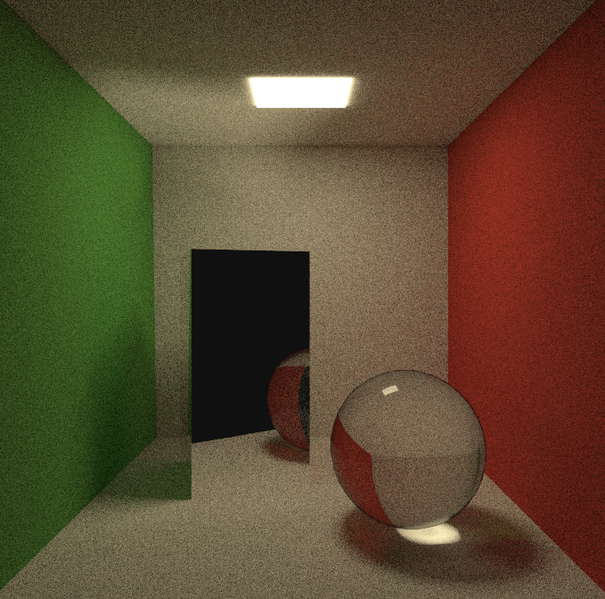

En este trabajo se explorarán las técnicas modernas de informática gráfica físicamente realistas basadas en ray tracing en tiempo real. Para ello, se utilizarán métodos de integración de Monte Carlo con el fin de disminuir el tiempo de cómputo.
Se diseñará un software basado en la interfaz de programación de aplicaciones gráficas Vulkan, utilizando como soporte un entorno de desarrollo de Nvidia conocido como nvpro-samples. El software implementará un motor gráfico basado en path tracing. Este motor será capaz de renderizar numerosas escenas, cambiar los parámetros del algoritmo path tracing y modificar las fuentes de iluminación en tiempo de ejecución.
Con el fin de explorar cómo afectan diferentes métodos al ruido final de la imagen, se estudiarán algunas técnicas de reducción de varianza como muestreo directo de fuentes de iluminación, muestreo por importancia o acumulación temporal. Además, el motor desarrollado se comparará con una implementación puramente en CPU basada en el software creado en los libros de (Shirley 2020a) “Ray Tracing in One Weekend series”. Se comporbarán las diferencias entre ambas versiones, estudiando los puntos fuertes de cada una.
Palabras clave: raytracing, ray tracing, path tracing, métodos de Monte Carlo, integración de Monte Carlo, transporte de luz, iluminación global, Vulkan.
TODO
Keywords: raytracing, ray tracing, path tracing, Monte Carlo methods, Monte Carlo integration, light transport, global illumination, Vulkan.
¡Parece que has llegado un poco pronto! Si lo has hecho voluntariamente, ¡muchas gracias! Este proyecto debería estar finalizado en verano de 2022. Mientras tanto, actualizaré poco a poco el contenido. Si quieres ir comprobando los progresos, puedes visitar Asmilex/Raytracing en Github para ver el estado del desarrollo.
Aun así, hay mucha gente que me ha ayudado a sacar este proyecto hacia delante.
Gracias, en primer lugar, a mi familia por permitirme acabar la carrera. A Blanca, Cristina, Jorge, Jose OC, Lucas, Mari, Marina, Mapachana y Paula, Sergio por ayudarme con el contenido, feedback del desarrollo y guía de diseño.
Este trabajo puede visualizarse en la web asmilex.github.io/Raytracing o en el PDF disponible en el repositorio del trabajo Asmilex/Raytracing.
La página web contiene la versión más actualizada, además de recursos adicionales como vídeos.
Ser capaces de capturar un momento.
Desde siempre, este ha sido uno de los sueños de la humanidad. La capacidad de retener lo que ven nuestros ojos comenzó con simples pinturas ruprestres. Con el tiempo, el arte evolucionó, así como la capacidad de retratar nuestra percepción con mayor fidelidad.
A inicios del siglo XVIII, se caputaron las primeras imágenes con una cámara gracias a Nicéphore Niépce. Sería una imagen primitiva, claro; pero era funcional. Gracias a la compañía Kodak, la fotografía se extendió al consumidor rápidamente sobre 1890. Más tarde llegaría la fotografía digital, la cual simplificaría muchos de los problemas de las cámaras tradicionales.
Hablando de digital. Los ordenadores personales modernos nacieron unos años más tarde. Los usuarios eran capaces de mostrar imágenes en pantalla, que cambiaban bajo demanda. Y, entonces, nos hicimos una pregunta…
¿Podríamos simular la vida real para mostrarla en pantalla?
Como era de esperar, esto es complicado de lograr. Para conseguirlo, hemos necesitado crear abstracciones de conceptos que nos resultan naturales, como objetos, luces y seres vivos. “Cosas” que un ordenador no entiende, y sin embargo, para nosotros funcionan.
Así, nació la geometría, los puntos de luces, texturas, sombreados, y otros elementos de un escenario digital. Pero, por muchas abstracciones elegantes que tengamos, no nos basta. Necesitamos visualizarlas. Y como podemos imaginarnos, esto es un proceso costoso.
La rasterización es el proceso mediante el cual estos objetos tridimensionales se transforman en bidimensionales. Proyectando acordemente el entorno a una cámara, conseguimos colorear un pixel, de forma que represente lo que se ve en ese mundo.
TODO insertar imagen rasterización.
NOTE ¿quizás debería extender un poco más esta parte? Parece que se queda algo coja la explicación.
Aunque esta técnica es bastante eficiente en términos de computación y ha evolucionado mucho, rápidamente saturamos sus posibilidades. Conceptos como shadow maps, baked lightning, o reflection cubemaps intentan solventar lo que no es posible con rasterización: preguntrarnos qué es lo que se encuentra alrededor nuestra.
En parte, nos olvidamos de la intuitiva realidad, para centrarnos en aquello computacionalmente viable.
Y, entonces, en 1960 el trazado de rayos con una simple idea intuitiva.
En resumidas cuentas, ray tracing (o trazado de rayos en español), se basa en disparar fotones en forma de rayo desde nuestra cámara digital y hacerlos rebotar en la escena.
De esta forma, simulamos cómo se comporta la luz. Al impactar en un objeto, sufre un cambio en su trayectoria. Este cambio origina nuevos rayos, que vuelven a dispersarse por la escena. Estos nuevos rayos dependerán de las propiedades del objeto con el que hayan impactado. Con el tiempo necesario, lo que veremos desde nuestra cámara será una representación fotorealista de lo que habita en ese universo.
Esta técnica, tan estúpidamente intuitiva, se ha hecho famosa por su simpleza y su elegancia. Pues claro que la respuesta a “¿Cómo simulamos fielmente una imagen en un ordenador?” es “Representando la luz de forma realista”.
Aunque, quizás intuitiva no sea la palabra. Podemos llamarla natural, eso sí. A fin de cuentas, fue a partir del siglo XVIII cuando empezamos a entender que podíamos capturar la luz. Nuestros antepasados tenían teorías, pero no podían explicar por qué veíamos el mundo.
Ahora sí que sabemos cómo funciona. Entendiendo el por qué lo hace nos permitirá programarlo. Y, resulta que funciona impresionantemente bien.
Atrás se quedan los hacks necesarios para rasterización. Los cubemaps no son esenciales para los reflejos, y no necesitamos cámaras virtuales para calcular sombras. Ray tracing permite simular fácilmente efectos como reflejos, refracción, desenfoque de movimiento, aberración cromática… Incluso fenómenos físicos propios de las particulas y las ondas.
Espera. Si tan bueno es, ¿por qué no lo usamos en todos lados?
Por desgracia, el elefante en la sala es el rendimiento. Como era de esperar, disparar rayos a diestro y siniestro es costoso. Muy costoso.
A diferencia del universo, nosotros no nos podemos permitir el lujo de usar fotones de tamaño infinitesimal y dispersiones casi infinitas. Nos pasaríamos una eternidad esperando. Y para ver una imagen en nuestra pantalla necesitaremos estar vivos, claro.
Debemos evitar la fuerza bruta. Dado que la idea es tan elegante, la respuesta no está en el “qué”, sino en el “cómo”. Si disparamos y dispersamos rayos con cabeza seremos capaces de obtener lo que buscamos en un tiempo razonable.
Hace unos años, al hablar de tiempo razonable, nos referiríamos a horas. Quizás días. Producir un frame podría suponer una cantidad de tiempo impensable para un ordenador de consumidor. Hoy en día también ocurre esto, claro está. Pero la tecnología evoluciona.
Podemos bajarlo a milisegundos.
Hemos entrado en la era del real time ray tracing.
Los objetivos del trabajo iniciales son los siguientes:
TODO: determinar si lo siguiente es cierto.
Afortunadamente, se ha conseguido realizar exitosamente cada uno de los objetivos. Esta memoria cubrirá todo el trabajo que ha sido necesario realizar para lograrlo.
TODO: echarle un ojo a esto cuando termine el trabajo.
Además del antedicho algoritmo ray tracing y su versión más pura path tracing, se han empleado técnicas de Monte Carlo para calcular la luz resultante de un punto.
En particular, con respecto a la matemática empleada, estudiaremos diferentes formas de generar números aleatorios mediante distribuciones particulares, (multiple) importance sampling, next event estimation, …
En un área híbrida se encuentra la radiometría. Dado que estamos tratando con transporte de luz, será esencial introducir los conceptos más importantes de la radiometría. Trataremos con algunos términos como irradiancia, ángulos sólidos, radiancia, funciones de distribuciones de reflectancia y transmitancia bidireccionales, etc.
Finalmente, la parte informática usará en la API gráfica Vulkan junto a un framework de Nvidia para acelerar la adopción de ray tracing en KHR. Veremos qué se necesita para implementar ray tracing en tiempo real, lo que nos llevará aprender sobre programación en Vulkan, las estructuras de aceleración de nivel alto y bajo (TLAS y BLAS), la Shader Binding Table, comunicación con CPU y GPU, etc.
Todo este programa estará alojado en Github. En el apéndice, aprenderemos cómo se ha usado la plataforma para integrar la documentación, el código fuente y los ciclos de desarrollo.
Como podemos ver, esta área relaciona íntimamente la matemática y la informática, con un poco de física de por medio.
Esencialmente, este trabajo ha sido posible gracias a los siguientes recursos:
TODO: tengo que ver exactamente cómo cito esa fuente anterior.
(Wikipedia: history of photography 2022), (Wikipedia: Kodak 2022), (Wikipedia: Computer 2022), (Wikipedia: rendering (computer graphics) 2022), (Caulfield 2020), (tracing 2022), (“Rendering” n.d.), (Haines and Akenine-Möller 2019)
Empecemos por definir lo que es un rayo.
Un rayo (Shirley 2020a) es una función \(P(t) = O + tD\), donde \(O\) es el origin, \(D\) la dirección, y \(t \in \mathbb{R}\). Podemos considerarlo una interpolación entre dos puntos en el espacio, donde \(t\) controla la posición en la que nos encontramos.
Por ejemplo, si \(t = 0\), obtendremos el origen. Si \(t = 1\), obtendremos el punto correspondiente a la dirección. Usando valores negativos vamos hacia atrás.
Dado que estos puntos estarán generalmente en \(\mathbb{R}^3\), podemos escribirlo como
\[ P(t) = (O_x, O_y, O_z) + t (D_x, D_y, D_z) \]
Estos rayos los dispararemos a través de una cámara virtual, que estará enfocando a la escena. De esta forma, los haremos rebotar con los objetos que se encuentren en el camino del rayo. A este proceso lo llamaremos ray casting.

Generalmente, nos quedaremos con el primer objeto que nos encontremos en su camino. Aunque, a veces, nos interesará saber todos con los que se encuentre.
Cuando un rayo impacta con un objeto, adquirirá parte de las propiedades lumínicas del punto de impacto. Por ejemplo, cuánta luz proporciona la lámpara que tiene encima la esfera de la figura anterior.
Una vez recojamos la información que nos interese, aplicaremos otro raycast desde el nuevo punto de impacto, escogiendo una nueva dirección determinada. Esta dirección dependerá del tipo de material del objeto. Y, de hecho, algunos serán capaces de invocar varios rayos.
Por ejemplo, los espejos reflejan la luz casi de forma perfecta; mientras que otros elementos como el agua o el cristal reflejan y refractan luz, así que necesitaremos generar dos nuevos raycast.
Usando suficientes rayos obtendremos la imagen de la escena. A este proceso de ray casting recursivo es lo que se conoce como ray tracing.
Como este proceso puede continuar indefinidamente, tendremos que controlar la profundidad de la recursión. A mayor profundidad, mayor calidad de imagen; pero también, mayor tiempo de ejecución.
Una de las partes más importantes de ray tracing, y a la que quizás dedicaremos más tiempo, es a la elección de la dirección.
Hay varios factores que entran en juego a la hora de decidir qué hacemos cuando impactamos con un nuevo objeto:
Estas cuestiones las exploraremos a fondo en las siguientes secciones.
Como dijimos al principio del capítulo, representaremos un rayo como
\[ \begin{aligned} P(t) & = (O_x, O_y, O_z) + t (D_x, D_y, D_z) = \\ & = (O_x + t D_x, O_y + t D_y, O_y + t D_z) \end{aligned} \]
Por ejemplo, tomando \(O = (1, 3, 2), D = (1, 2, 1)\):
Nos resultará especialmente útil limitar los valores que puede tomar \(t\). Restringiremos los posibles puntos del dominio de forma que \(t \in [t_{min}, t_{max})\), con \(t_{min} < t_{max}\). En general, nos interesará separarnos de las superficies un pequeño pero no despreciable \(\varepsilon\) para evitar errores de redondeo.

Una de las principales cuestiones que debemos hacernos es saber cuándo un rayo impacta con una superficie. Lo definiremos analíticamente.
Generalmente, cuando hablemos de superficies, nos referiremos superficies diferenciables (Wikipedia: Differential geometry of surfaces 2022), pues nos interesará conocer el vector normal en cada punto.
Una superficie implícita es una superficie en un espacio euclidiano definida como
\[ F(x, y, z) = 0 \]
Esta ecuación implícita define una serie de puntos del espacio \(\mathbb{R}^3\) que se encuentran en la superficie.
Por ejemplo, la esfera se define como \(x^2 + y^2 + z^2 - 1 = 0\).
Consideremos una superficie \(S\) y un punto regular de ella \(P\); es decir, un punto tal que el gradiente de \(F\) en \(P\) no es 0. Se define el vector normal \(\mathbf{n}\) a la superficie en ese punto como
\[ \mathbf{n} = \nabla F(P) = \left( \frac{\partial F(P)}{\partial x}, \frac{\partial F(P)}{\partial y}, \frac{\partial F(P)}{\partial z}\right ) \]
TODO: dibujo de la normal a una superficie.
Dado un punto \(Q \in \mathbb{R}^3\), queremos saber dónde interseca un rayo \(P(t)\). Es decir, para qué \(t\) se cumple que \(F(P(t)) = 0 \iff F(O + tD) = 0\).
Consideremos ahora un plano. Para ello, nos tomamos un punto \(Q_0\) del plano y un vector normal a la superficie \(\mathbf{n}\). La ecuación implícita del plano será (Shirley and Morley 2003)
\[ F(Q) = (Q - Q_0) \cdot \mathbf{n} = 0 \]
Si pinchamos nuestro rayo en la ecuación,
\[ \begin{aligned} F(P(t)) & = (P(t) - Q_0) \cdot \mathbf{n} \\ & = (O + tD - Q_0) \cdot \mathbf{n} = 0 \\ \end{aligned} \]
Resolviendo para \(t\), esto se da si
\[ \begin{aligned} O \cdot \mathbf{n} + tD \cdot \mathbf{n} - Q_0 \cdot \mathbf{n} & = 0 & \iff \\ tD \cdot \mathbf{n} & = Q_0 \cdot \mathbf{n} - O \cdot \mathbf{n} & \iff \\ t & = \frac{Q_0 \cdot \mathbf{n} - O \cdot \mathbf{n}}{D \cdot \mathbf{n}} \end{aligned} \]
Es decir, hemos obtenido el único valor de \(t\) para el cual el rayo toca la superficie.
Debemos tener en cuenta el caso para el cual \(D \cdot \mathbf{n} = 0\). Esto solo se da si la dirección y el vector normal a la superficie son paralelos.
TODO: dibujo de dos rayos con un plano: uno corta a la superficie, mientras que el otro es paralelo.
Otra forma de definir una superficie en el espacio es mediante un subconjunto \(D \subset \mathbb{R}^2\) y una serie de funciones, \(f, g, h: D \rightarrow \mathbb{R}^3\), de forma que
\[ (x, y, z) = \left( f(u, v), g(u, v), h(u, v) \right) \\ \]
En informática gráfica, hacemos algo similar cuando mapeamos una textura a una superficie. Se conoce como UV mapping.
Demos un par de ejemplos de superficies paramétricas: - El grafo de una función \(f: D \rightarrow \mathbb{R}^3\), \[ G(f) = \left\{(x, y, f(x, y)) \,\middle|\, (x, y) \in D\right\} \] define una superficie diferenciable siempre que \(f\) también lo sea. - Usando coordenadas esféricas \((r, \theta, \phi)\), podemos parametrizar la esfera como \((x, y, z) = (\cos\phi\sin\theta, \sin\phi\sin\theta, \cos\theta)\)
TODO añadir imagen de coordenadas esféricas. U otro capítulo con coordenadas.
NOTE: estoy usando (radial, polar, azimuthal). \(\theta\) corresponde con la apertura con respecto a la vertical
El vector normal \(\mathbf{n}\) a la superficie en un punto \((u, v)\) del dominio viene dado por
\[ \mathbf{n}(u, v) = \left( \frac{\partial f}{\partial u}, \frac{\partial g}{\partial u}, \frac{\partial h}{\partial u} \right) \times \left( \frac{\partial f}{\partial v}, \frac{\partial g}{\partial v}, \frac{\partial h}{\partial v} \right) \]
Encontrar el punto de intersección de una superficie paramétrica con un rayo es sencillo. Basta con encontrar aquellos puntos \((u, v)\) y \(t\) para los que
\[ \begin{aligned} O_x + tD_x & = f(u, v) \\ O_y + tD_y & = g(u, v) \\ O_z + tD_z & = h(u, v) \\ \end{aligned} \]
Es posible que el rayo no impacte en ningún punto. En ese caso, el sistema de ecuaciones no tendría solución. Otra posibilidad es que intersequen en varios puntos.
Estudiemos ahora cómo intersecan una esfera con nuestro rayo. Una esfera de centro \(C\) y radio \(r\) viene dada por aquellos puntos \(P = (x, y, z)\) que cumplen
\[ (P - C) \cdot (P - C) = r^2 \]
Podemos reescribir esta ecuación en términos de sus coordenadas para obtener
\[ (x - C_x)^2 + (y - C_y)^2 + (z - C_z)^2 = r^2 \]
Veamos para qué valores de \(t\) de nuestro rayo se cumple esa ecuación:
\[ \begin{aligned} (P(t) - C) \cdot (P(t) - C) & = r^2 & \iff \\ (O + tD - C) \cdot (O + tD - C) & = r^2 & \iff \\ \end{aligned} \]
Aplicando las propiedades del producto escalar de la conmutatividad (\(a \cdot b = b \cdot a\)) y la distributiva (\(a \cdot (b + c) = a \cdot b + a \cdot c\)), podemos escribir
\[ \begin{aligned} ((O - C) + tD) \cdot ((O - C) + tD) & = r^2 & \iff \\ (O - C)^2 + 2 \cdot (O - C) \cdot tD + (tD)^2 & = r^2 & \iff \\ D^2t^2 + 2 D \cdot (O - C)t + (O - C)^2 - r^2 & = 0 & \iff \\ \end{aligned} \]
Así que tenemos una ecuación de segundo grado. Resolviéndola, nos salen nuestros puntos de intersección:
\[ t = \frac{ - D \cdot (O - C) \pm \sqrt{(D \cdot (O - C))^2 - 4 (D^2)((O - C)^2 - r^2)} }{ 2 D^2 } \]
Debemos distinguir tres casos, atiendiendo al valor que toma el discriminante \(\Delta = \small{(D \cdot (O - C))^2 - 4 (D^2)((O - C)^2 - r^2)}\):

Para estos dos últimos, si consideramos \(t_0\) cualquier solución válida, el vector normal resultante viene dado por
\[ \mathbf{n} = 2 (P(t_0) - C) \]
o, normalizando,
\[ \hat{\mathbf{n}} = \frac{(P(t_0) - C)}{r} \]
Este tipo de intersecciones serán las más útiles en nuestro path tracer. Generalmente, nuestras geometrías estarán compuestas por mallas de triángulos, así que conocer dónde impacta nuestro rayo será clave. Empecemos por la base:
Un triángulo viene dado por tres puntos, \(A, B\), y \(C\); correspondientes a sus vértices. Para evitar casos absurdos, supongamos que estos puntos son afinmente independientes; es decir, que no están alineados.
Podemos describir los puntos contenidos en el plano que forman estos vertices mediante coordenadas baricéntricas. Este sistema de coordenadas expresa cada punto del plano como una combinación convexa de los vértices (Wikipedia: Barycentric coordinate system 2022). Es decir, que para cada punto \(P\) del triángulo existen \(\alpha, \beta\) y \(\gamma\) tales que \(\alpha + \beta + \gamma = 1\) y
\[ P = \alpha A + \beta B + \gamma C \]
TODO: triángulo con coordenadas baricéntricas.
Debemos destacar que existen dos grados de libertad debido a la restricción de que las coordenadas sumen 1.
Una propiedad de estas coordenadas que nos puede resultar útil es que un punto \(P\) está contenido en el triángulo si y solo si \(0 < \alpha, \beta, \gamma < 1\).
Esta propiedad y la restricción de que sumen 1 nos da una cierta intuición de cómo funcionan. Podemos ver las coordenadas baricéntricas como la contribución de los vértices a un punto \(P\). Por ejemplo, si \(\alpha = 0\), eso significa que el punto viene dado por \(\beta B + \gamma C\); es decir, una combinación lineal de \(B\) y \(C\). Se encuentra en la recta que generan.
Por proponer otro ejemplo, si alguna de las coordenadas fuera mayor que 1, eso significaría que el punto estaría más allá del triángulo.
TODO: dibujo con explicación de cómo funciona (libreta Shinrin - Yoku)
Podemos eliminar una de las varibales escribiendo \(\alpha = 1 - \beta - \gamma\), lo que nos dice
\[ \begin{aligned} P & = (1 - \beta - \gamma) A + \beta B + \gamma C \\ & = A + (B - A) \beta + (C - A) \gamma \end{aligned} \]
bajo la restricción
\[ \begin{aligned} \beta + \gamma & < 1 \\ 0 & < \beta \\ 0 & < \gamma \end{aligned} \](1)
Un rayo \(P(t) = O + tD\) impactará en un punto del triángulo si se cumple
\[ P(t) = O + tD = A + (B - A) \beta + (C - A) \gamma \]
cumpliendo [1]. Podemos expandir la ecuación anterior en sus coordenadas para obtener
\[ \begin{aligned} O_x + tD_x & = A_x + (B_x - A_x) \beta + (C_x - A_x) \gamma \\ O_y + tD_y & = A_y + (B_y - A_y) \beta + (C_y - A_y) \gamma \\ O_z + tD_z & = A_z + (B_z - A_z) \beta + (C_z - A_z) \gamma \\ \end{aligned} \]
Reordenamos:
\[ \begin{aligned} (A_x - B_x) \beta + (A_x - C_x) \gamma+ tD_x & = A_x - O_x \\ (A_y - B_y) \beta + (A_y - C_y) \gamma+ tD_y & = A_y - O_y \\ (A_z - B_z) \beta + (A_z - C_z) \gamma+ tD_z & = A_z - O_z \end{aligned} \]
Lo que nos permite escribir el sistema en forma de ecuación:
\[ \begin{pmatrix} A_x - B_x & A_x - C_x & D_x \\ A_y - B_y & A_y - C_y & D_y \\ A_z - B_z & A_z - C_z & D_z \end{pmatrix} \begin{pmatrix} \beta \\ \gamma \\ t \end{pmatrix} = \begin{pmatrix} A_x - O_x \\ A_y - O_y \\ A_z - O_z \end{pmatrix} \]
Calcular rápidamente la solución a un sistema de ecuaciones lineales es un problema habitual. En (Shirley and Morley 2003) se utiliza la regla de Cramer para hacerlo, esperando que el compilador optimice las variables intermedias creadas. Nosotros no nos tendremos que preocupar de esto en particular, ya que el punto de impacto lo calculará la GPU gracias a las herramientras aportadas por KHR (The Khronos Vulkan Working Group 2022, Ray Traversal).
Para obtener el vector normal, podemos hacer el producto vectorial de dos vectores que se encuentren en el plano del triángulo. Como, por convención, los vértices se guardan en sentido antihorario visto desde fuera del objeto, entonces
\[ \mathbf{n} = (B - A) \times (C - A) \]
En este capítulo estudiaremos las bases de la radiometría. Esta área de la óptica nos proporcionará una serie de herramientas con las cuales podremos responder a la pregunta cuánta luz existe en un punto.
Nota: cuando usemos un paréntesis tras una ecuación, dentro denotaremos sus unidades de medida.
Antes de comenzar a trabajar, necesitamos conocer qué entendemos por luz. Aunque hay muchas formas de trabajar con ella (a fin de cuentas, todavía seguimos discutiendo sobre qué es exactamente la luz 1), nosotros nos quedaremos con algunas pinceladas de la cuántica. Nos será suficiente quedarnos con la concepción de fotón. Una fuente de iluminación emite una serie de fotones. Estos fotones tienen una posición, una dirección de propagación y una longitud de onda \(\lambda\) (Shirley and Morley 2003). Un fotón también tiene asociado una velocidad \(c\) que depende del índice de refracción del medio, \(n\).
La unidad de medida de \(\lambda\) es el nanómetro (\(\text{nm}\)). También nos vendrá bien definir una frecuencia, \(f\). Su utilidad viene del hecho de que, cuando la luz cambia de medio al propagarse, la frecuencia se mantiene constante.
\[ f = \frac{c}{\lambda} \]
Un fotón tiene asociada una carga de energía, denotada por \(Q\):
\[ Q = hf = \frac{hc}{\lambda} (\text{J}) \]
donde \(h = 6.62607004 \times 10^{-34} \text{J} \cdot \text{s}\) es la constante de Plank y \(c = 299 792 458 \text{m/s}\) la velocidad de la luz.
En realidad, todas estas cantidades deberían tener un subíndice \(\lambda\), puesto que dependen de la longitud de onda. La energía de un fotón \(Q\), por ejemplo, debería denotarse \(Q_\lambda\). Sin embargo, en la literatura de informática gráfica, se ha optado por omitirla. ¡Tenlo en cuenta a partir de aquí!
A partir de la energía anterior, podemos estimar la tasa de producción de energía. A esta tasa la llamaremos potencia, o flujo radiante \(\Phi\) (Pharr, Jakob, and Humphreys 2016, Radiometry). Esta medida nos resultará más útil que la energía total, puesto que nos permite estimar la energía en un instante:
\[ \Phi = \lim_{\Delta t \to 0}{\frac{\Delta Q}{\Delta t}} = \frac{dQ}{dt} (J/s) \]
Su unidad es julios por segundo, comúnmente denotado vatio (watts, \(\text{W}\)). También se utiliza el lumen. Podemos encontrar la energía total en un periodo de tiempo \([t_0, t_1]\) integrando el flujo radiante:
\[ Q = \int_{t_0}^{t_1}{\Phi(t)dt} \]
La irradiancia o radiancia emitida es el flujo radiante que recibe una superficie. Dada un área \(A\), se define como
\[ E = \frac{\Phi}{A} (\text{W/m}^2) \]

Ahora que tenemos la potencia emitida en una cierta área, nos surge una pregunta: ¿y en un cierto punto \(p\)?. Tomando límites en la expresión anterior, encontramos la respuesta:
\[ E(p) = \lim_{\Delta A \to 0}{\frac{\Delta \Phi}{\Delta A}} = \frac{d\Phi}{dA} (\text{W/m}^2) \]
De la misma manera que con la potencia, integrando \(E(p)\) podemos obtener el flujo radiante:
\[ \Phi = \int_{A}{E(p)dp} \]
El principal problema de la irradiancia es que no nos dice nada sobre las direcciones desde las que ha llegado la luz.
Con estas tres unidades básicas, nos surge una pregunta muy natural: ¿cómo mido cuánta luz llega a una superficie?
Para responder a esta pregunta, necesitaremos los ángulos sólidos. Son la extensión de los ángulos planares, en dos dimensiones.
Ilustremos el sentido de estos ángulos: imaginemos que tenemos un cierto objeto en dos dimensiones delante de nosotros, a una distancia desconocida. ¿Sabríamos cuál es su tamaño, solo con esta información? Es más, si entrara otro objeto en la escena, ¿podríamos distinguir cuál de ellos es más grande?
Parece difícil responder a estas preguntas. Sin embargo, sí que podemos determinar cómo de grandes nos parecen desde nuestro punto de vista. Para ello, describimos una circunferencia de radio \(r\) alrededor nuestra. Si trazamos un par de líneas desde nuestra posición a las partes más alejadas de este objeto, y las cortamos con nuestra circunferencia, obtendremos un par de puntos inscritos en ella. Pues bien, al arco que encapsulan dichos puntos le vamos a hacer corresponder un cierto ángulo: el ángulo planar.

Llevando esta idea a las tres dimensiones es como conseguimos el concepto de ángulo sólido. Si en dos dimensiones teníamos una circunferencia, aquí tendremos una esfera. Cuando generemos las rectas proyectantes hacia el volumen, a diferencia de los ángulos planares, se inscribirá un área en la esfera. La razón entre dicha área \(A\) y el cuadrado del radio \(r\) nos dará un ángulo sólido:
\[ \omega = \frac{A}{r^2} \text{(sr)} \]

Los denotaremos por \(\omega\). En física se suele usar \(\Omega\), pero aquí optaremos por la minúscula. Su unidad de medida es el estereorradián (\(\text{sr}\)). Se tiene que \(\omega \in [0, 4\pi]\). Si \(2 \pi\) radianes corresponden a la circunferencia completa, para la esfera se tiene que \(4 \pi\) esteorradianes cubren toda la superficie de esta. Se tiene también que \(2\pi \text{sr}\) cubren un hemisferio. Además, un esteorradián corresponde a una superficie con área \(r^2\): \(1 \text{sr} = \frac{r^2}{r^2}\).
De vez en cuando, usaremos \(\omega\) un vector dirección unitario en la esfera.

Usualmente emplearemos coordenadas esféricas cuando trabajemos con ellos, dado que resulta más cómodo.
\[ \begin{aligned} \begin{cases} x = \sin\theta\cos\theta \\ y = \sin\theta\sin\theta \\ z = \cos\theta \end{cases} \end{aligned} \]
A \(\theta\) se le denomina ángulo polar, mientras que a \(\phi\) se le llama acimut. Imaginémonos un punto en la esfera de radio \(r\) ubicado en una posición \((r, \theta, \phi)\). Queremos calcular un área chiquitita \(dA_h\), de forma que el ángulo sólido asociado a dicha área debe ser \(d\omega\). Así, \(d\omega = \frac{dA_h}{r^2}\). Si proyectamos el área, obtenemos \(d\theta\) y \(d\phi\): pequeños cambios en los ángulos que nos generan nuestra pequeña área (Berkeley cs184 2022, Radiometry & Photometry).
\(dA_h\) debe tener dos lados \(lado_1\) y \(lado_2\). Podemos hallar \(lado_1\) si lo trasladamos al eje \(z\) de nuevo. Así, \(lado_1 = r \sin d\theta\). De la misma manera, \(lado_2 = r d\theta\).
TODO: foto que explique todo esto, porque si no, no hay quien se entere. Quizás me sirva la de https://cs184.eecs.berkeley.edu/public/sp22/lectures/lec-11-radiometry-and-photometry/lec-11-radiometry-and-photometry.pdf, p.16 siempre que adapte \(\phi\).
Poniendo estos valores en \(d\omega\):
\[ \begin{aligned} d\omega & = \frac{dA_h}{r^2} = \frac{lado_1 lado_2}{r^2} = \\ & = \frac{r \sin\theta\ d\phi\ r\ d\theta}{r^2} = \\ & = \sin\theta\ d\theta\ d\phi \end{aligned} \](2)
¡Genial! Acabamos de añadir un recurso muy potente a nuestro inventario. Esta expresión nos permitirá convertir integrales sobre ángulos sólidos en integrales sobre ángulos esféricos.
Los ángulos sólidos nos proporcionan una variedad de herramientas nuevas considerable. Gracias a ellos, podemos desarrollar algunos conceptos nuevos. Uno de ellos es la intensidad radiante.
Imaginémonos un pequeñito punto de luz encerrado en una esfera, el cual emite fotones en todas direcciones. Nos gustaría medir cuánta energía pasa por la esfera. Podríamos entonces definir
\[ I = \frac{\Phi}{4\pi} \text{(W/sr)} \]
Otra unidad de medida es el lumen por esterorradián, \(\text{(lm/sr)}\). La anterior definición mide cuántos fotones pasan por toda la esfera. ¿Qué ocurre si cerramos el ángulo, restringiéndonos así a un área muy pequeña de la esfera?
\[ I = \lim_{\Delta\omega \to 0}{\frac{\Delta\Phi}{\Delta\omega}} = \frac{d\Phi}{d\omega} \]
De la misma manera que con los conceptos anteriores, podemos volver a la potencia integrando sobre un conjunto de direcciones:
\[ \Phi = \int_{\Omega}{I(\omega)d\omega} \]
Finalmente, llegamos al concepto más importante. La radiancia espectral (o radiancia a secas2) (Pharr, Jakob, and Humphreys 2016, Radiometry) es una extensión de la radiancia emitida teniendo en cuenta la dirección:
\[ L(p, \omega) = \lim_{\Delta\omega \to 0}{\frac{\Delta E_\omega(p)}{\Delta\omega}} = \frac{dE_\omega(p)}{d\omega} \]
siendo \(E_\omega(p)\) la radiancia emitida a la superficie perpendicular a \(\omega\).
TODO: foto como la de https://cs184.eecs.berkeley.edu/public/sp22/lectures/lec-11-radiometry-and-photometry/lec-11-radiometry-and-photometry.pdf, página 10.
Podemos dar otra expresión de la radiancia en términos del flujo:
\[ L(p, \omega) = \frac{d^2\Phi(p, \omega)}{d\omega\ dA^\bot} = \frac{d^2\Phi(p, \omega)}{d\omega\ dA\ \cos\theta} \](3)
donde \(dA^\bot\) es el área proyectada por \(dA\) en una hipotética superficie perpendicular a \(\omega\):
TODO: figura similar a pbr figura 5.10 https://www.pbr-book.org/3ed-2018/Color_and_Radiometry/Radiometry
Cuando un rayo impacta en una superficie, \(L\) puede tomar valores muy diferentes en un lado y otro de dicha superficie. Por ejemplo, si nos imaginamos un espejo, el valor un poco por encima y un poco por debajo de un punto del espejo es muy diferente. Para solucionarlo, podemos tomar límites para distinguir a ambos lados:
\[ \begin{aligned} L^+(p, \omega) = \lim_{t \to 0^+}{L(p + t\mathbf{n_p}, \omega)} \\ L^-(p, \omega) = \lim_{t \to 0^-}{L(p + t\mathbf{n_p}, \omega)} \end{aligned} \](4)
donde \(\mathbf{n_p}\) es la normal en el punto \(p\).
Otra forma de solucionarlo (y preferible, puesto que simplifica entender lo que ocurre) es distinguir entre la radiancia que llega a un punto –la incidente–, y la saliente.
La primera se llamará \(L_i(p, \omega)\), mientras que la segunda será \(L_o(p, \omega)\). Es importante destacar que \(\omega\) apunta hacia fuera de la superficie. Quizás es contraintuitivo en \(L_i\), puesto que \(-\omega\) apunta hacia la superficie. Depende del autor se utiliza una concepción u otra.
Nota(ción): a \(L_o\) también se le conoce como la radiancia reflejada. Por eso, algunas veces aparece como \(L_r\) en algunas fuentes.
Utilizando esta notación y usando [4], podemos escribir \(L_i\) y \(L_o\) como
\[ \begin{aligned} L_i(p, \omega) & = \begin{cases} L^+(p, -\omega) & \text{si } \omega \cdot \mathbf{n_p} > 0 \\ L^-(p, -\omega) & \text{si } \omega \cdot \mathbf{n_p} < 0 \end{cases} \\ L_o(p, \omega) & = \begin{cases} L^+(p, \omega) & \text{si } \omega \cdot \mathbf{n_p} > 0 \\ L^-(p, \omega) & \text{si } \omega \cdot \mathbf{n_p} < 0 \end{cases} \end{aligned} \]
Hacemos esta distinción porque, a fin de cuentas, necesitamos distinguir entre los fotones que llegan a la superficie y los que salen.
TODO: https://cs184.eecs.berkeley.edu/public/sp22/lectures/lec-11-radiometry-and-photometry/lec-11-radiometry-and-photometry.pdf, p.36
Una propiedad a tener en cuenta es que, si cogemos un punto \(p\) del espacio donde no existe ninguna superifcie, \(L_o(p, \omega) = L_i(p, -\omega) = L(p, \omega)\)
La importancia de la radiancia se debe a un par de propiedades:
La primera de ellas es que, dado \(L\), podemos calcular cualquier otra unidad básica mediante integración. Además, su valor se mantiene constante en rayos que viajan en el vacío en línea recta (Fabio Pellacini 2022). Esto último hace que resulte muy natural usarla en un ray tracer.
Veamos por qué ocurre esto:
TODO: https://pellacini.di.uniroma1.it/teaching/graphics17b/lectures/12_pathtracing.pdf, página 18.
Consideremos dos superficies ortogonales entre sí, \(S_1\) y \(S_2\) separadas una distancia \(r\). Debido a la conservación de la energía, cualquier fotón que salga de una superficie y se encuentre bajo el ángulo sólido de la otra debe llegar impactar en dicha superficie opuesta.
Por tanto:
\[ d^2\Phi_1 = d^2\Phi_2 \]
Sustituyendo en la expresión de la radiancia [3], y teniendo en cuenta que son ortogonales (lo que nos dice que \(\cos\theta = 1\)):
\[ L_1 d\omega_1 dA_1 = L_2 d\omega_2 dA_2 \]
Por construcción, podemos cambiar los ángulos sólidos:
\[ L_1 \frac{dA_2}{r^2} dA_1 = L_2 \frac{dA_1}{r^2} dA_2 \]
Lo que finalmente nos dice que \(L_1 = L_2\), como queríamos ver.
En esta sección, vamos a explorar las nuevas herramientas que nos proporciona la radiancia. Veremos también cómo integrar ángulos sólidos, y cómo simplificar dichas integrales.
Como dijimos al final de la sección de la irradiancia, esta medida no tiene en cuenta las direcciones desde las que llegaba la luz. A diferencia de esta, la radiancia sí que las utiliza. Dado que una de las ventajas de la radiancia es que nos permite obtener el resto de medidas radiométricas, ¿por qué no desarrollamos una nueva expresión de la irradiancia?
Para obtener cuánta luz llega a un punto, debemos acumular la radiancia incidente que nos llega desde cualquier dirección.
TODO: dibujo como el de la libreta roja. Me lo mandé por Telegram, por si no lo encuentro
Dado un punto \(p\) que se encuentra en una superficie con normal \(\mathbf{n}\) en dicho punto, la irradiancia se puede expresar como (Pharr, Jakob, and Humphreys 2016, Working with Radiometric Integrals)
\[ E(p, \mathbf{n}) = \int_{\Omega}{L_i(p, \omega) \left\lvert cos\theta \right\rvert d\omega} \](5)
El término \(\cos\theta\) aparece en la integral debido a la derivada del área proyectada, \(dA^\bot\). \(\theta\) es el ángulo entre la dirección \(\omega\) y la normal \(\mathbf{n}\).
Generalmente, la irradiancia se calcula únicamente en el hemisferio de direcciones asociado a la normal en el punto, \(H^2(\mathbf{n})\).
Podemos eliminar el \(\cos\theta\) de la integral mediante una pequeña transformación: proyectando el ángulo sólido sobre el disco alrededor del punto \(p\) con normal \(\mathbf{n}\), obtenemos una expresión más sencilla: como \(d\omega^\bot = \left\lvert \cos\theta \right\rvert d\omega\), entonces
\[ \begin{aligned} E(p, \mathbf{n}) = \int_{H^2(\mathbf{n})}{L_i(p, \omega) d\omega^\bot} \end{aligned} \]
Usando lo que aprendimos sobre la derivada de los ángulos sólidos [2], se puede reescribir la ecuación anterior como
\[ E(p, \mathbf{n}) = \int_{0}^{2\pi}\int_{0}^{\pi/2}{L_i(p, \theta, \phi) \cos\theta\ \sin\theta\ d\theta\ d\phi} \]
Haciendo el mismo juego con el flujo emitido de un cierto objeto al hemisferio que encapsula la normal, conseguimos:
\[ \begin{aligned} \Phi & = \int_{A}\int_{H^2(\mathbf{n})}{L_o(p, \omega) \cos\theta\ d\omega dA} = \\ & = \int_{A}\int_{H^2(\mathbf{n})}{L_o(p, \omega) d\omega^\bot dA} \end{aligned} \]
TODO: a lo mejor merece la pena hacer un ejemplo sobre los diferentes tipos de luz, como en https://cs184.eecs.berkeley.edu/public/sp22/lectures/lec-11-radiometry-and-photometry/lec-11-radiometry-and-photometry.pdf p.41? O a lo mejor un capítulo para hablar de luces en general.
Una herramienta más que nos vendrá bien será la capacidad de convertir integrales sobre direcciones en integrales sobre área. Hemos hecho algo similar en las secciones anteriores, así que no perdemos nada por generalizarlo.
Considera un punto \(p\) sobre una superficie con normal en dicho punto \(\mathbf{n}\). Supongamos que tenemos una pequeña área \(dA\) con normal \(\mathbf{n_{dA}}\). Sea \(\theta\) el ángulo entre \(\mathbf{n}\) y \(\mathbf{n_{dA}}\), y \(r\) la distancia entre \(p\) y \(dA\).
Entonces, la relación entre la diferencial de un ángulo sólido y la de un área es
\[ d\omega = \frac{dA\cos\theta}{r^2} \]
TODO: figura como la de pbr book 5.16.
Esto nos permite, por ejemplo, expandir algunas expresiones como la de la irradiancia [5] si partimos de un cuadrilátero \(dA\):
\[ \begin{aligned} E(p, \mathbf{n}) & = \int_{\Omega}{L_i(p, \omega) \left\lvert \cos\theta \right\rvert d\omega} = \\ & = \int_{A}{L\cos\theta\ \frac{\cos\theta_o}{r^2}dA} \end{aligned} \]
siendo \(\theta_o\) el ángulo de la radiancia de salida de la superficie del cuadrilátero.
TODO: hablar sobre las diferencias. Hay información útil en 01_lights.pdf, p.43
Cuando una luz impacta en una superficie, ocurren un par de sucesos: parte de los fotones se reflejan saliendo disparados hacia alguna dirección, mientras que otros se absorben.
La forma en la que se comportan depende de cómo sea la superficie. Específicamente, del material del que esté hecha.
En informática gráfica se consideran tres tipos principales de dispersión de luz: dispersión en superficie (surface scattering), dispersión volumétrica (volumetric scattering) y dispersión bajo superficie (subsurface scattering)
En este capítulo vamos a modelar la primera. Estudiaremos qué es lo que ocurre cuando los fotones alcanzan una superficie, en qué dirección se reflejan, y cómo cambia el comportamiento dependiendo de las propiedades del material.
La función de distribución de reflectancia bidireccional (en inglés, bidirectional reflectance distribution function, BRDF) (Pharr, Jakob, and Humphreys 2016, Surface Reflection) describe cómo la luz se refleja en una superficie opaca. Se encarga de informarnos sobre cuánta radiancia sale en dirección \(\omega_o\) debido a la radiancia incidente desde la dirección \(\omega_i\), partiendo de un punto \(p\) en una superficie con normal \(\mathbf{n}\). Depende de la longitud de onda \(\lambda\), pero, como de costumbre, la omitiremos.
Intuición: ¿cuál es la probabilidad de que, habiéndome llegado un fotón desde \(\omega_i\), me salga disparado hacia \(\omega_o\)?
TODO: esquema como el de pbr fig. 5.18, o como https://pellacini.di.uniroma1.it/teaching/graphics17b/lectures/12_pathtracing.pdf p.20
Si consideramos \(\omega_i\) como un cono diferencial de direcciones, la irradiancia diferencial en \(p\) viene dada por
\[ dE(p, \omega_i) = L_i(p, \omega_i) \cos\theta_i\ d\omega_i \]
Debido a esta irradiancia, una pequeña parte de radiancia saldrá en dirección \(\omega_o\), proporcional a la irradiancia:
\[ dL_o(p, \omega_o) \propto dE(p, \omega_i) \]
Si lo ponemos en forma de cociente, sabremos exactamente cuál es la proporción de luz. A este cociente lo llamaremos \(f_r(p, \omega_o \leftarrow \omega_i)\); la función de distribución de reflectancia bidireccional:
\[ f_r(p, \omega_o \leftarrow \omega_i) = \frac{dL_o(p, \omega_o)}{dE(p, \omega_i)} = \frac{dL_o(p, \omega_o)}{L_i(p, \omega_i) \cos\theta_i\ d\omega_i} \text{(1/sr)} \]
Nota(ción): dependiendo de la fuente que estés leyendo, es posible que te encuentres una integral algo diferente. Por ejemplo, en tanto en Wikipedia como en (Shirley and Morley 2003) se integra con respecto a los ángulos de salida \(\omega_o\), en vez de los incidentes.
Aquí, usaremos la notación de integrar con respecto a los incidentes, como se hace en (Pharr, Jakob, and Humphreys 2016).
Las BRDF físicamente realistas tienen un par de propiedades importantes:
\[ \int_{H^2(\mathbf{n})}{f_r(p, \omega_o \leftarrow \omega_i) \cos\theta_i\ d\omega_i} \leq 1 \]
Si la BRDF describe cómo se refleja la luz, la bidirectional transmittance distribution function (abreviada BTDF) nos informará sobre la transmitancia; es decir, cómo se comporta la luz cuando entra en un medio. Generalmente serán dos caras de la misma moneda: cuando la luz impacta en una superficie, parte de ella, se reflejará, y otra parte se transmitirá.
Puedes imaginarte la BTDF como una función de reflectancia del hemisferio opuesto a donde se encuentra la normal de la superficie.
Denotaremos a la BTDF por
\[ f_t(p, \omega_o \leftarrow \omega_i) \]
Al contrario que en la BRDF, \(\omega_o\) y \(\omega_i\) se encuentran en hemisferios diferentes.
Convenientemente, podemos unir la BRDF y la BTDF en una sola expresión, llamada la función de distribución de dispersión bidireccional (bidirectional scattering distribution function, BSDF). A la BSDF la denotaremos por
\[ f(p, \omega_o \leftarrow \omega_i) \]
Nota(ción): también se suele utilizar BxDF en vez de BSDF.
Usando esta definición, podemos obtener
\[ dL_o(p, \omega_o) = f(p, \omega_o \leftarrow \omega_i) L_i(p, \omega_i) \left\lvert \cos\theta_i \right\rvert d\omega_i \]
Esto nos deja a punto de caramelo una nueva expresión de la randiancia en términos de la randiancia incidente en un punto \(p\). Integrando la expresión anterior, obtenemos
\[ L_o(p, \omega_o) = \int_{\mathbb{S}^2}{f(p, \omega_o \leftarrow \omega_i)L_i(p, \omega_i)\left\lvert \cos\theta_i \right\rvert d\omega_i} \](6)
siendo \(\mathbb{S}^2\) la esfera.
Intuición: la BSDF son todas las posibles direcciones en las que puede salir disparada la luz.
Esta forma de expresar la radiancia es muy importante. Generalmente se le suele llamar la ecuación de dispersión (scattering equation, en inglés). Dado que es una integral muy importante, seguramente tengamos que evaluarla repetidamente. ¡Los métodos de Monte Carlo nos vendrán de perlas! Más adelante hablaremos de ella.
Las BSDFs tienen unas propiedades interesantes:
\[ \int_{H^2(\mathbf{n})}{f(p, \omega_o \leftarrow \omega_i) \cos\theta_i\ d\omega_i} \le 1\ \forall \omega_o \]
Puede ser útil tomar el comportamiento agregado de las BRDFs y las BTDFs y reducirlo un cierto valor que describa su comportamiento general de dispersión. Sería Algo así como un resumen de su distribución. Para conseguirlo, vamos a introducir dos nuevas funciones:
El albedo (Szirmay-Kalos 2000), o también conocido como la reflectancia hemisférica-direccional (hemispherical-directional reflectance) (Pharr, Jakob, and Humphreys 2016, Reflection Models, Basic Interface) describe la reflexión total sobre un hemisferio debida a una fuente de luz que proviene desde la dirección \(\omega_o\) :
\[ \rho_{hd}(\omega_o) = \int_{H^2(n)}{f_r(p, \omega_o \leftarrow \omega_i) \left\lvert \cos\theta_i \right\rvert\ d\omega_i} \]
Por otra parte, la reflectancia hemisférica-hemisférica (hemispherical-hemispherical reflectance) es un valor espectral que nos proporciona el ratio de luz incidente reflejada por una superficie, suponiendo que llega la misma luz desde todas direcciones:
\[ \rho_{hh} = \frac{1}{\pi} \int_{H^2(n)} \int_{H^2(n)}{f_r(p, \omega_o \leftarrow \omega_i) \left\lvert \cos\theta_o\ \cos\theta_i \right\rvert\ d\omega_o\ d\omega_i} \]
En la práctica, cada superficie tendrá una BSDF característica. Esto hace que la luz adquiera una dirección particular al incidir en cada punto de esta. En esta sección, vamos a tratar algunas BSDFs particulares e introduciremos las fórmulas fundamentales que se usan en los modelos de materiales (también conocidos como modelos de shading).
Los tipos de materiales que vamos a tratar son las básicos. Entre ellos, se encuentran la difusa lambertiana, materiales dieléctricos, espejos y algunas BSDFs compuestas. Un repertorio de implementaciones se encuentra en el repositorio de BRDFs de (Walt Disney Animation Studios 2019).
Prácticamente toda superficie, en mayor o menor medida, refleja parte de la luz incidente. Otros tipos de materiales reflejan y refractan a la vez, como puede ser un espejo o el agua.

TODO: cambiar por foto propia
En esencia, los reflejos se pueden clasificar en cuatro grandes tipos (McGuire 2021, Materials):
Ten en cuenta que es muy difícil encontrar objetos físicos que imiten a la perfección un cierto modelo. Suelen recaer en un híbrido entre dos o más modelos.
Fijado un cierto modelo, la función de distribución de reflectancia, BRDF, puede ser isotrópica o anisotrópica. Los materiales isotrópicos mantienen las propiedades de reflectancia invariantes ante rotaciones; es decir, la distribución de luz es la misma en todas direcciones. Por el contrario, los anisotrópicos reflejan diferentes cantidades de luz dependiendo desde dónde los miremos. Los ejemplos más habituales de materiales anisotrópicos son las rocas y la madera.
Primero, tratemos con materiales que únicamente reflejan luz; es decir, su BSDF es una BRDF.
Para un material especular perfecto (es decir, espejos), la dirección reflejada \(\mathbf{r}\) dado un rayo incidente \(\mathbf{i}\) es (Adam Marrs and Wald 2021, Reflection and refraction formulas, p. 105):
\[ \mathbf{r} = \mathbf{i} - 2 (\mathbf{i} \cdot \mathbf{n}) \mathbf{n} \]
siendo \(\mathbf{n}\) la normal en el punto incidente. Con esta expresión, se necesita que \(\mathbf{n}\) esté normalizado. Para los otros dos vectores no es necesario; la dirección de salida tendrá la misma norma que la de entrada.
Su BRDF se define mediante una delta de Dirac (Szirmay-Kalos 2000, 3.2), (McGuire 2021, Materials):
\[ f_r(\mathbf{r} \leftarrow \mathbf{i} ) = \frac{\delta(\mathbf{i}, \mathbf{r}) k_r(\left\lvert \mathbf{i} \cdot \mathbf{n} \right\rvert)}{\left\lvert \mathbf{i} \cdot \mathbf{n} \right\rvert} \]
siendo \(\rho_{hd} = k_r(\left\lvert \mathbf{i} \cdot \mathbf{n} \right\rvert)\) el albedo, con \(k_r\) el coeficiente de reflectividad, cuyo valor se encuentra entre 0 y 1, dependiendo de la energía que se pierda.
Este es uno de los modelos más sencillos. Es conocido también como el modelo lambertiano. Se asume que la superficie es completamente difusa, lo cual implica que la luz se refleja en todas direcciones equiprobablemente, independientemente del punto de vista del observador. Esto significa que
\[ f_r(\omega_o \leftarrow \omega_i) = k_d \]
con \(k_d\) el coeficiente de difusión.
El albedo viene dado por
\[ \begin{aligned} \rho_{hd}(\omega_o) & = \int_{H^2(n)}{k_d \cos\theta_i\ d\omega_i} = \\ & = \int_{\phi = 0}^{2\pi} \int_{\theta = 0}^{\pi/2}{k_d \cos\theta\ d\theta\ d\phi} = \\ & = k_d \pi \end{aligned} \]
Para que se cumpla la condición de conservación de energía, necesariamente \(k_d \le 1/\pi\).
En la práctica no se utiliza mucho, pues está muy limitado.
El modelo de Phong se basa en la observación de que, cuando el punto de vista se alinea con la dirección del vector de luz reflejado \(r = 1 - 2(\mathbf{n} \cdot \mathbf{l})\mathbf{n}\), aparecen puntos muy iluminados, lo que se conoce como resaltado especular.
Esta idea se refleja considerando la componente especular como
\[ L_o^s(p, \omega_o \leftarrow \omega_i) = k_\alpha + k_d L_o^d(p, \omega_o \leftarrow \omega_i) + k_s \max\{0, \omega \cdot \mathbf{r}\}^\alpha \]
donde \(k_\alpha\) es el coeficiente de luz ambiental (con \(\alpha\) el índice de brillo) \(k_s\) es la constante de reflectancia especular (specular-reflection) que define el ratio de luz reflejada, \(k_d\) el de radiancia difusa \(L_o^d\). Usualmente, \(k_s \vert k_d < 1\).
Evidentemente, este modelo no es más que una aproximación físicamente poco realista de la realidad; pero funciona lo suficientemente bien como para usarlo en ciertas partes.
float Phong_specular(vec3 normal, vec3 light_dir, vec3 view_dir, float shininess) {
return pow(
max(
0.0,
dot(
reflejar(normal, light_dir),
view_dir
)
),
shininess
);
}Este es una pequeña modificación al de Phong. En vez de usar el vector reflejado de luz, se define un vector unitario entre el observador y la luz, \(\mathbf{h} = \frac{\omega + \mathbf{l}}{\left\lVert \omega + \mathbf{l} \right\rVert}\). Resulta más fácil calcularlo. Además, este modelo es más realista.
\[ L_o^s(p, \omega_o \leftarrow \omega_i) = k_\alpha + k_d L_o^d(p, \omega_o \leftarrow \omega_i) + k_s \max\{0, \mathbf{h} \cdot \mathbf{n}\}^\alpha \]
float BlingPhong_specular(vec3 normal, vec3 light_dir, vec3 view_dir, float shininess) {
vec3 h = normalize(view_dir + light_dir);
return pow(
max(
0.0,
dot(h, normal)
),
shininess
);
}Algunos materiales permiten que la luz los atraviese –conocido como transmisión–. En estos casos, decimos que se produce un cambio en el medio. Para conocer cómo de rápido viajan los fotones a través de ellos, se utiliza un valor denominado índice de refracción, usualmente denotado por \(\eta\):
\[ \eta = \frac{c}{\nu} \]
siendo \(c\) la velocidad de la luz en el vacío y \(\nu\) la velocidad de fase del medio, la cual depende de la longitud de onda. Sin embargo, como hemos comentado varias veces, no tendremos en cuenta la longitud de onda en nuestro ray tracer, por lo que no nos tenemos que preocupar de esto.
Algunos materiales como el aire tienen un índice de refracción \(\eta_{\text{aire}} = 1.0003\), mientras que el del agua vale \(\eta_{\text{agua}} = 1.333\), y el del cristal vale \(\eta_{\text{cristal}} = 1.52\).
La ley de Snell nos proporciona una ecuación muy sencilla que relaciona el cambio de un medio con índice de refracción \(\eta_1\) a otro con índice de refracción \(\eta_2\):
\[ \eta_1 \sin\theta_1 = \eta_2 \sin\theta_2 \](7)
siendo \(\theta_1\) y \(\theta_2\) los ángulos de entrada y salida respectivamente.
Usualmente, los índices de refración son conocidos, así como el ángulo de incidencia \(\theta_1\), por lo que podremos calcular el ángulo del vector refractado con facilidad:
\[ \theta_2 = \arcsin{\left(\frac{\eta_1}{\eta_2}\sin\theta_2\right)} \]
Cuando cambiamos de un medio con índice de refracción \(\eta_1\) a otro con \(\eta_2 < \eta_1\), podemos encontrarnos ante un caso de reflexión interna total. Analíticamente, lo que ocurre es que
\[ \sin\theta_2 = \frac{\eta_1}{\eta_2}\sin\theta_1 > 1 \]
lo cual no puede ocurrir. Se denomina el ángulo crítico a aquel \(\theta_1\) para la cual \(\frac{\eta_1}{\eta_2}\sin\theta_1 > 1\):
\[ \theta_1 = \arcsin{\left(\frac{\eta_2}{\eta_1}\right)} \]
Por ejemplo, si un haz de luz viaja desde un cristal hacia un cuerpo de agua, entonces \(\theta_1 = \arcsin{(1.333/1.52)} \approx 1.06\) radianes \(= 61.04\textdegree\).
Lo que ocurre en estos casos es que, en vez de pasar al segundo medio, los fotones vuelven al primero; creando un reflejo como si de un espejo se tratara.

Aquellos materiales que refractan y reflejan luz (como el agua de la foto anterior) no pueden generar energía de la nada; por lo que la combinación de ambos efectos debe ser proporcional a la luz incidente. Es decir, una fracción de luz es reflejada, y otra es refractada. Las ecuaciones de Fresnel nos permiten conocer esta cantidad.
La proporción de luz reflejada desde un rayo que viaja por un medio con índice de refracción \(\eta_1\) y ángulo de incidencia \(\theta_1\) a otro medio con índice de refracción \(\eta_2\) es (Adam Marrs and Wald 2021, The Schlick Fresnel approximation, p. 109):
\[ \begin{aligned} R_s & = \left\lvert \frac {\eta_1 \cos\theta_1 - \eta_2 \sqrt{1 - \left( \frac{\eta_1}{\eta_2}\sin\theta_1\right) ^2}} {\eta_1 \cos\theta_1 + \eta_2 \sqrt{1 - \left( \frac{\eta_1}{\eta_2}\sin\theta_1\right) ^2}} \right\rvert^2 \\ R_p & = \left\lvert \frac {\eta_1 \sqrt{1 - \left( \frac{\eta_1}{\eta_2}\sin\theta_1\right)^2} - \eta_2\cos\theta_1} {\eta_1 \sqrt{1 - \left( \frac{\eta_1}{\eta_2}\sin\theta_1\right)^2} + \eta_2\cos\theta_1} \right\rvert^2 \end{aligned} \](8)
donde los subíndices \(s\) y \(p\) denotan la polarización de la luz: \(s\) es perpendicular a la dirección de propagación, mientras que \(p\) es paralela.
Generalmente en los ray tracers la polarización se ignora, promediando ambas expresiones, resultando en una ecuación más simple:
\[ R = \frac{R_s + R_p}{2} \](9)
Como podemos imaginarnos, calcular las expresiones de Fresnel [8] no es precisamente barato. En la práctica, todo el mundo utiliza una aproximación creada por Schlick, la cual funciona sorprendentemente bien. Viene dada por
\[ R(\theta_1) = R_0 + (1 - R_0)(1 - \cos\theta_1)^5 \](10)
siendo \(R_0 = R(0)\); es decir, el valor que toma \(R\) cuando el rayo incidente es paralelo al medio. Su valor es
\[ R_0 = \left(\frac{\eta_1 - \eta_2}{\eta_1 + \eta_2}\right)^2 \]
Esta aproximación es 32 veces más rápida de calcular que las ecuaciones de Fresnel, generando un error medio inferior al 1% (Schlick 1994)
Este modelo intenta aproximar superficies difusas utilizando un ratio de lambertiano, lo cual mejora el rendimiento el white furnace test:
float OrenNayar_diffuse(vec3 normal, vec3 light_dir, vec3 view_dir, material m) {
float L_dot_V = dot(light_dir, view_dir);
float N_dot_L = dot(light_dir, noral);
float N_dot_V = dot(normal, view_dir);
float s = L_dot_V - N_dot_L * N_dot_V;
float t = mix(
1.0,
ma(N_dot_L, N_dot_V),
step(0.0, s)
);
float sigma2 = m.roughness * m.roughness;
float A = 1.0 + sigma2 * (m.albedo / (sigma2 + 0.13) + 0.5 / (sigma2 + 0.33));
float B = 0.45 * sigma2 / (sigma2 + 0.09);
return m.albedo * max(0.0, N_dot_L) * (A + B * s / t) / PI;
}El modelo Ground Glass Unknown es una BSDF analítica que se basa en la distribución de microfacetas del material subyacente. Es una de las técnicas más avanzadas y exploradas recientemente. Los motores modernos como Unreal Engine 4 y Unity lo utilizan en sus pipelines físicamente realistas.
A diferencia de los otros modelos, no entraremos en detalles de la implementación.
Y, finalmente, tras esta introducción de los principales conceptos radiométricos, llegamos a la ecuación más importante de todo este trabajo: la rendering equation; también llamada la ecuación del transporte de luz.
Nota(ción): esta vez no traduciré el concepto. Es cierto que afea un poco la escritura teniendo en cuenta que esto es un texto en castellano. Sin embargo, la otra opción es inventarme una traducción que nadie usa.
Antes de comenzar, volvamos a plantear de nuevo la situación: nos encontramos observando desde nuestra pantalla una escena virtual mediante la cámara. Queremos saber qué color tomará un pixel específico. Para conseguirlo, dispararemos rayos desde nuestro punto de vista hacia el entorno, haciendo que reboten en los objetos. Cuando un rayo impacte en una superficie, adquirirá parte de las propiedades del material del objeto. Además, de este rayo surgirán otros nuevos (un rayo dispersado y otro refractado), que a su vez repetirán el proceso. La información que se obtiene a partir de estos caminos de rayos nos permitirá darle color al píxel. Con dicha ecuación, describiremos analíticamente cómo ocurre esto.
Un último concepto más: denotemos por \(L_e(p, \omega_o)\) a la radiancia producida por los materiales emisivos. En esencia, estos materiales son fuentes de luz, pues emiten radiancia por sí mismos.
La rendering equation viene dada por la siguiente expresión:
\[ L_o(p, \omega_o) = L_e(p, \omega_o) + \int_{H^2(\mathbf{n})}{f(p, \omega_o \leftarrow \omega_i) L_i(p, \omega_i) \cos\theta_i\ d\omega_i} \](11)
Para hacerla operativa en términos computacionales podemos transformarla un poco. Bien, partamos de la ecuación de para la radiancia reflejada:
\[ L_o(p, \omega_o) = \int_{H^2(\mathbf{n})}{f(p, \omega_o \leftarrow \omega_i) L_i(p, \omega_i) \cos\theta_i\ d\omega_i} \]
Vamos a buscar expresar la radiancia incidente en términos de la radiancia reflejada. Para ello, usamos la propiedad de que la radiancia a lo largo de un rayo no cambia.
Si a una superficie le llega un fotón desde alguna parte, debe ser porque “alguien” ha tenido que emitirlo. El fotón necesariamente ha llegado a partir de un rayo. La propiedad nos dice que la radiancia no ha podido cambiar en el camino.
Pues bien, consideremos una función \(r: \mathbb{R}^3 \times \Omega \to \mathbb{R}^3\) tal que, dado un punto \(p\) y una dirección \(\omega\), devuelve el siguiente punto de impacto en una superficie. En esencia, es una función de ray casting (Fabio Pellacini 2022, Path Tracing).
Esta función nos permite expresar el punto anterior de la siguiente forma:
\[ L_i(p, \omega) = L_o(r(p, \omega), -\omega) \]
Esto nos permite cambiar la expresión de \(L_i\) en la integral anterior:
\[ L_o(p, \omega_o) = \int_{H^2(\mathbf{n})}{f(p, \omega_o \leftarrow \omega_i) L_o(r(p, \omega_i), -\omega_i) \cos\theta_i\ d\omega_i} \]
Finalmente, la radiancia total vendrá dada por la suma de la radiancia emitida y la reflejada:
\[ L(p, \omega_o) = L_e(p, \omega_o) + \int_{H^2(\mathbf{n})}{f(p, \omega_o \leftarrow \omega_i) L_o(r(p, \omega_i), -\omega_i) \cos\theta_i\ d\omega_i} \]
Y con esto, ¡hemos obtenido la rendering equation!
Si quieres ver gráficamente cómo funciona, te recomiendo pasarte por (Arnebäck 2019). Es un vídeo muy intuitivo.
Si nos paramos a pensar, la ecuación de reflexión es muy similar a la de renderizado. Sin embargo, hay un par de matices que las hacen muy diferentes:
Este último matiz es importante. Para renderizar una imagen, se necesita calcular la radiancia de salida para aquellos puntos visibles desde nuestra cámara.
Como vimos en el capítulo anterior, la clave para conseguir una imagen en nuestro ray tracer es calcular la cantidad de luz en un punto de la escena. Para ello, necesitamos hallar la radiancia en dicha posición mediante la rendering equation. Sin embargo, es muy difícil resolverla; tanto computacional como analíticamente. Por ello, debemos atacar el problema desde otro punto de vista.
Las técnicas de Monte Carlo nos permitirán aproximar el valor que toman las integrales mediante una estimación. Utilizando muestreo aleatorio para evaluar puntos de una función, seremos capaces de obtener un resultado suficientemente bueno.
Una de las propiedades que hacen interesantes a este tipo de métodos es la independencia del ratio de convergencia y la dimensionalidad del integrando. Sin embargo, conseguir un mejor rendimiento tiene un precio a pagar. Dadas \(n\) muestras, la convergencia a la solución correcta tiene un orden de \(\mathcal{O}\left(n^{-1/2}\right) = \mathcal{O}\left(\frac{1}{\sqrt{n}}\right)\). Es decir, para reducir el error a la mitad, necesitaríamos 4 veces más muestras.
En este capítulo veremos los fundamentos de la integración de Monte Carlo, cómo muestrear distribuciones específicas y métodos para afinar el resultado final.
Antes de comenzar a fondo, necesitaremos unas nociones de variable aleatoria para poder entender la integración de Monte Carlo, por lo que vamos a hacer un breve repaso.
Una variable aleatoria \(X\) (v.a.) es, esencialmente, una regla que asigna un valor numérico a cada posibilidad de un proceso de azar. Formalmente, es una función definida en un espacio de probabilidad \((\Omega, \mathcal{A}, P)\) asociado a un experimento aleatorio:
\[ X: \Omega \rightarrow \mathbb{R} \]
A \(\Omega\) lo conocemos como espacio muestral (conjunto de todas las posibilidades), \(\mathcal{A}\) es una \(\sigma\)-álgebra de subconjuntos de \(\Omega\) que refleja todas las posibilidades de eventos aleatorios, y \(P\) es una función probabilidad, que asigna a cada evento una probabilidad.
Una variable aleatoria \(X\) puede clasificarse atendiendo a cómo sea su rango \(R_X = \left\{x \in \mathbb{R} \,\middle|\, \exists \omega \in \Omega \text{ tal que } X(\omega) = x \right\}\): en discreta o continua.
Las v.a. discretas son aquellas cuyo rango es un conjunto discreto.
Para comprender mejor cómo funcionan, pongamos un ejemplo: Consideremos un experimento en el que lanzamos dos dados, anotando lo que sale en cada uno. Los posibles valores que toman serán (Galvin n.d.):
\[ \begin{aligned} \Omega = \{ & (1, 1), (1, 2), (1, 3), (1, 4), (1, 5), (1, 6), \\ & (2, 1), (2, 2), (2, 3), (2, 4), (2, 5), (2, 6), \\ & (3, 1), (3, 2), (3, 3), (3, 4), (3, 5), (3, 6), \\ & (4, 1), (4, 2), (4, 3), (4, 4), (4, 5), (4, 6), \\ & (5, 1), (5, 2), (5, 3), (5, 4), (5, 5), (5, 6), \\ & (6, 1), (6, 2), (6, 3), (6, 4), (6, 5), (6, 6) \} \end{aligned} \]
Cada resultado tiene la misma probabilidad de ocurrir (claro está, si el dado no está trucado). Como hay \(36\) posibilidades, la probabilidad de obtener un cierto valor es de \(\frac{1}{36}\).
La v.a. \(X\) denotará la suma de los valores obtenidos en cada uno. Así, por ejemplo, si al lanzar los dados hemos obtenido \((1, 3)\), \(X\) tomará el valor \(4\). En total, \(X\) puede tomar todos los valores comprendidos entre \(2\) y \(12\). Cada pareja no está asociada a un único valor de \(X\). Por ejemplo, \((1, 2)\) suma lo mismo que \((2, 1)\). Esto nos lleva a preguntarnos… ¿Cuál es la probabilidad de que \(X\) adquiera un cierto valor?
La función masa de probabilidad nos permite conocer la probabilidad de que \(X\) tome un cierto valor \(x\). Se denota por \(P(X = x)\).
También se suele usar \(p_X(x)\) o, directamente \(p(x)\), cuando no haya lugar a dudas. Sin embargo, en este trabajo reservaremos este nombre a otro tipo de funciones.
Nota(ción): Cuando \(X\) tenga una cierta función masa de probabilidad, escribiremos \(X \sim p_X\)
En este ejemplo, la probabilidad de que \(X\) tome el valor \(4\) es
\[ \begin{aligned} P(X = 4) & = \sum{\small{\text{nº parejas que suman 4}} \cdot \small{\text{probabilidad de que salga la pareja}}} \\ & = 3 \cdot \frac{1}{36} = \frac{1}{12} \end{aligned} \]
Las parejas serían \((1, 3), (2, 2)\) y \((3, 1)\).
Por definición, si el conjunto de valores que puede tomar \(X\) es \(\{x_1, \dots, x_n\}\), la función masa de probabilidad debe cumplir que
\[ \sum_{i = 1}^{n}{P(X = x_i)} = 1 \]
Muchas veces nos interesará conocer la probabilidad de que \(X\) se quede por debajo de un cierto valor \(x\) (de hecho, podemos caracterizar distribuciones aleatorias gracias a esto). Para ello, usamos la función de distribución:
\[ F_X(x) = P(X \le x) = \sum_{\substack{k \in \mathbb{R} \\ k \le x}}{P(X = k)} \]
Es una función continua por la derecha y monótona no decreciente. Además, se cumple que \(0 \le F_X \le 1(x)\) y \(\lim_{x \to -\infty}{F_X} = 0\), \(\lim_{x \to \infty}{F_X} = 1\).
En nuestro ejemplo, si consideramos \(x = 3\):
\[ \begin{aligned} F_X(x) & = \sum_{i = 1}^{3}{P(X = i)} = P(X = 1) + P(X = 2) + P(X = 3) \\ & = \frac{1}{36} + \frac{2}{36} + \frac{3}{36} = \frac{1}{12} \end{aligned} \]
Este tipo de variables aleatorias tienen un rango no numerable; es decir, el conjunto de valores que puede tomar abarca un intervalo de números.
Un ejemplo podría ser la altura de una persona.
Si en las variables aleatorias discretas teníamos funciones masa de probabilidad, aquí definiremos las funciones de densidad de probabilidad (o simplemente, funciones de densidad). La idea es la misma: nos permite conocer la probabilidad de que nuestra variable aleatoria tome un cierto valor del espacio muestral.
Es importante mencionar que, aunque la probabilidad de que la variable aleatoria tome un valor específico es \(0\), ya que nos encontramos en un conjunto no numerable, sí que podemos calcular la probabilidad de que se encuentre entre dos valores. Por tanto, si la función de densidad es \(f_X\), entonces
\[ P(a \le X \le b) = \int_{a}^{b}{f_X(x)dx} \]
La función de densidad tiene dos características importantes:
\[ \int_{-\infty}^{\infty}{f_X(x)} = 1 \]
Estas dos propiedades caracterizan a una función de densidad; es decir, toda función \(f: \mathbb{R} \rightarrow \mathbb{R}\) no negativa e integrable tal que \(\int_{\infty}^{\infty}{f_X(x)} = 1\) es la función de densidad de alguna variable continua.
Intuitivamente, podemos ver esta última propiedad como si acumulamos todos los valores que puede tomar la variable aleatoria, la probabilidad de que te encuentres en el conjunto debe ser 1. Si tratamos con un conjunto de números reales, podemos escribir la integral como \(\int_{-\infty}^{\infty}{f_X(x)} = 1\).
Una de las variables aleatorias que más juego nos darán en el futuro será la v.a. con distribución uniforme en \([0, 1)\). La denotaremos \(\Xi \sim U\left([0, 1)\right)\). La probabilidad de que \(\xi\) tome un valor es constante, por lo que podemos definir su función de densidad como
\[ f_\Xi(\xi) = \left\{ \begin{array}{llc} 1 & \text{si } \xi \in [0, 1) \\ 0 & \text{en otro caso.} \end{array} \right. \]
La probabilidad de \(\Xi\) tome un valor entre dos elementos \(a, b \in [0, 1)\) es
\[ P(\Xi \in [a, b]) = \int_{a}^{b}{1dx} = b - a \]
Como veremos más adelante, definiendo correctamente una función de densidad conseguiremos mejorar el rendimiento del path tracer.
La función de distribución \(F_X(x)\) podemos definirla como:
\[ F_X(x) = P(X \le x) = \int_{-\infty}^{x}{f_X(t)dt} \]
Es decir, dado un \(x\), ¿cuál sería la probabilidad de que \(X\) se quede por debajo de \(x\)?
El Teorema Fundamental del Cálculo nos permite relacionar función de distribución y función de densidad directamente:
\[ f_X(x) = \frac{dF_X(x)}{dx} \]
La esperanza de una variable aleatoria, denotada \(E\left[ X \right]\), es una generalización de la media ponderada. Nos informa del valor esperado de dicha variable aleatoria.
En el caso de las variables discretas, se define como
\[ E\left[ X \right] = \sum_{i}{x_i p_i} \]
donde \(x_i\) son los posibles valores que puede tomar la v.a., y \(p_i\) la probabilidad asociada a cada uno de ellos; es decir, \(p_i = P[X = x_i]\)
Para una variable aleatoria continua real, la esperanza viene dada por
\[ E\left[ X \right] = \int_{-\infty}^{\infty}{x f_X(x) dx} \]
Pongamos un par de ejemplos del cálculo de la esperanza. En el ejemplo de las variables discretas, la esperanza venía dada por
\[ E\left[ X \right] = \sum_{i = 2}^{12}{i P[X = i]} = 2\frac{1}{36} + 3 \frac{2}{36} + \dots + 12 \frac{1}{36} = 7 \]
Para variables aleatorias uniformes en \((a, b)\) (es decir, \(X \sim U(a, b)\)), la esperanza es
\[ E\left[ X \right] = \int_{a}^{b}{x \frac{1}{b - a}dx} = \frac{a + b}{2} \]
La esperanza tiene unas cuantas propiedades que nos resultarán muy útiles. Estas son:
Será habitual encontrarnos con el problema de que no conocemos la distribución de una variable aleatoria \(Y\). Sin embargo, si encontramos una transformación medible de una variable aleatoria \(X\) de forma que obtengamos \(Y\) (esto es, \(\exists g\) función medible tal que \(g(X) = Y\)), entonces podemos calcular la esperanza de \(Y\) fácilmente. Esta propiedad hará que las variables aleatorias con distribución uniforme adquieran muchísima importancia. Generar números aleatorios en \([0, 1)\) es muy fácil, así que obtendremos otras vv.aa a partir de \(\xi\).
Otra medida muy útil de una variable aleatoria es la varianza. Nos permitirá medir cómo de dispersa es la distribución con respecto a su media. La denotaremos como \(Var[X]\), y se define como
\[ Var[X] = E\left[ (X - E\left[ X \right])^2 \right] \]
Si desarrollamos esta definición, podemos conseguir una expresión algo más agradable:
\[ \begin{aligned} Var[X] & = E\left[ (X - E\left[ X \right])^2 \right] = \\ & = E\left[ X^2 + E\left[ X \right]^2 - 2XE\left[ X \right] \right] = \\ & = E\left[ X^2 \right] + E\left[ X \right]^2 - 2E\left[ X \right]E\left[ X \right] = \\ & = E\left[ X^2\right] - E\left[X \right]^2 \end{aligned} \]
Hemos usado que \(E\left[ E\left[ X \right] \right] = E\left[ X \right]\) y la linealidad de la esperanza.
Enunciemos un par de propiedades que tiene, similares a la de la esperanza:
La varianza nos será útil a la hora de medir el error cometido por una estimación de Monte Carlo.
Además de las anteriores propiedades, existen una serie de teoremas esenciales que necesitaremos más adelante:
Ley del estadístico insconciente (Law of the unconscious statistician, o LOTUS): dada una variable aleatoria \(X\) y una función medible \(g\), la esperanza de \(g(X)\) se puede calcular como
\[ E\left[ g(X) \right] = \int_{-\infty}^{\infty}{g(x) f_X(x) dx} \](12)
Ley (fuerte) de los grandes números: dada una muestra de \(N\) valores \(X_1, \dots, X_N\) de una variable aleatoria \(X\) con esperanza \(E\left[ X \right] = \mu\),
\[ P\left[ \lim_{N \to \infty}{\frac{1}{N} \sum_{i = 1}^{N}{X_i}} = \mu \right] = 1 \]
Usando que \(\bar{X}_N = \frac{1}{N} \sum_{i = 1}^{N}{X_i}\), esta ley se suele escribir como
\[ P\left[ \lim_{N \to \infty}{\bar{X}_N} = \mu \right] = 1 \](13)
Este teorema es especialmente importante. En esencia, nos dice que cuando repetimos muchas veces un experimento, al promediar los resultados obtendremos una esperanza muy cercana a la esperanza real.
Teorema Central del Límite (CLT) para variables idénticamente distribuidas (Owen 2013, capítulo 2): Sean \(X_1, \dots, X_N\) muestras aleatorias simples de una variable aleatoria \(X\) con esperanza \(E\left[ X \right] = \mu\) y varianza \(Var[X] = \sigma^2\). Sea
\[ Z_N = \frac{\sum_{i = 1}^{N}{X_i - N\mu}}{\sigma \sqrt{N}} \]
Entonces, la variable aleatoria \(Z_N\) converge hacia una función de distribución normal estándar cuando \(N\) es suficientemente grande:
\[ \lim_{N \to \infty}{P[Z_N \le z]} = \int_{-\infty}^{z}{\frac{1}{\sqrt{2 \pi}} e^{- \frac{x^2}{2}}dx} \](14)
A veces, no podremos conocer de antemano el valor que toma un cierto parámetro de una distribución. Sin embargo, conocemos el tipo de distribución que nuestra variable aleatoria \(X\) sigue. Los estimadores nos proporcionarán una forma de calcular el posible valor de esos parámetros a partir de una muestra de \(X\).
Sea \(X\) una variablea aleatoria con distribución perteneciente a una familia de distribuciones paramétricas \(X \sim F \in \left\{F(\theta) \,\middle|\, \theta \in \Theta \right\}\). \(\Theta\) es el conjunto de valores que puede tomar el parámetro. Buscamos una forma de determinar el valor de \(\theta\).
Diremos que \(T(X_1, \dots, X_N)\) es un estimador de \(\theta\) si \(T\) toma valores en \(\Theta\).
A los estimadores de un parámetro los solemos denotar con \(\hat{\theta}\).
Como vemos, la definición no es muy restrictiva. Únicamente le estamos pidiendo a la función de la muestra que pueda tomar valores viables para la distribución.
Se dice que un estimador \(T(X_1, \dots, X_N)\) es insesgado (o centrado en el parámetro \(\theta\)) si
\[ E\left[ T(X_1, \dots, X_n) \right] = \theta\quad \forall \theta \in \Theta \]
Naturalmente, decimos que un estimador \(T(X_1, \dots, X_N)\) está sesgado si \(E\left[ T(X_1, \dots, X_N) \right] \not = \theta\).
Tras este breve repaso de probabilidad, estamos en condiciones de definir el estimador de Monte Carlo. Primero, vamos con su versión más sencilla.
Los estimadores de Monte Carlo nos permiten hallar la esperanza de una variable aleatoria, digamos, \(Y\), sin necesidad de calcular explícitamente su valor. Para ello, tomamos \(N\) muestras \(Y_1, \dots, Y_N\) de \(Y\), cuya media vale \(\mu\). Entonces, el estimador de \(\mu\) (Owen 2013, capítulo 2) es:
\[ \hat\mu_N = \frac{1}{N} \sum_{i = 1}^{N}{Y_i} \](15)
La intuición del estimador es, esencialmente, la misma que la del teorema central del límite. Lo que buscamos es una forma de calcular el valor promedio de un cierto suceso aleatorio, pero lo único que podemos usar son muestras de su variable aleatoria. Promediando esas muestras, sacamos información de la distribución. En este caso, la media.
En cualquier caso, la existencia de este estimador viene dada por la ley de los grandes números (tanto débil como fuerte [13]). Si \(\mu = E\left[ Y \right]\), se tiene que
\[ \lim_{N \to \infty}P\left[ \left\lvert \hat\mu_N - \mu \right\rvert \le \varepsilon \right] = 1 \quad \forall\ \varepsilon > 0 \]
o utilizando la ley de los números grandes,
\[ \lim_{N \to \infty}P\left[ \left\lvert \hat\mu_N - \mu \right\rvert = 0 \right] = 1 \]
Haciendo la esperanza de este estimador, vemos que
\[ \begin{aligned} E\left[ \hat\mu_N \right] & = E\left[ \frac{1}{N} \sum_{i = 1}^{N}{Y_i}\right] = \frac{1}{N} E\left[\sum_{i = 1}^{N}{Y_i} \right] \\ & = \frac{1}{N} \sum_{i = 1}^{N}{E\left[ Y_i \right]} = \frac{1}{N} \sum_{i = 1}^{N}{\mu} = \\ & = \mu \end{aligned} \]
Por lo que el estimador es insesgado. Además, se tiene que la varianza es
\[ E\left[ (\hat\mu_N - \mu)^2 \right] = \frac{\sigma^2}{N} \]
Un ejemplo clásico de estimador de Monte Carlo es calcular el valor de \(\pi\). Se puede hallar integrando una función que valga \(1\) en el interior de la circunferencia de radio unidad y \(0\) en el exterior:
\[ \begin{aligned} f = \begin{cases} 1 & \text{si } x^2 + y^2 \le 1 \\ 0 & \text{en otro caso} \end{cases} \Longrightarrow \pi = \int_{-1}^{1} \int_{-1}^{1}{f(x, y)}\ dxdy \end{aligned} \]
Para usar el estimador de [16], necesitamos saber la probabilidad de obtener un punto dentro de la circunferencia.
Bien, consideremos que una circunferencia de radio \(r\) se encuentra inscrita en un cuadrado. El área de la circunferencia es \(\pi r^2\), mientras que la del cuadrado es \((2r)^2 = 4r^2\). Por tanto, la probabilidad de obtener un punto dentro de la circunferencia es \(\frac{\pi r^2}{4r^2} = \frac{\pi}{4}\). Podemos tomar \(p(x, y) = \frac{1}{4}\), de forma que
\[ \pi \approx \frac{4}{N} \sum_{i = 1}^{N}{f(x_i, y_i)}, \text{ con } (x_i, y_i) \sim U(\small{[-1, 1] \times [-1, 1]}) \]
Generalmente nos encontraremos en la situación en la que \(Y = f(X)\), donde \(X \in S \subset \mathbb{R}^d\) sigue una distribución con función de densidad \(p_X(x)\) con media \(\mu = E\left[ X \right]\), y \(f: S \rightarrow \mathbb{R}\).
Consideremos el promedio de \(N\) muestras de \(f(X)\):
\[ \frac{1}{N} \sum_{i = 1}^{N}{f(X_i)}, \quad X_i \text{ idénticamente distribuidas} \]
En ese caso, la esperanza es
\[ \begin{aligned} E\left[ \frac{1}{N} \sum_{i = 1}^{N}{f(X_i)} \right] & = E\left[\frac{1}{N} \sum_{i = 1}^{N}{f(X)} \right] = \\ & = \frac{1}{N} N E\left[ f(X) \right] = \\ & = E\left[ f(X) \right] = \\ & = \int_S f(x) p_X(x) dx \end{aligned} \]
¡Genial! Esto nos da una forma de calcular la integral de una función usando las imágenes de \(N\) muestras \(f(X_1), \dots, f(X_N)\) de una variable aleatoria \(X \sim p_X\). A este estimador de Monte Carlo lo llamaremos \(\hat{I}_N\):
\[ \begin{aligned} \hat{I}_N & = \frac{1}{N} \sum_{i = 1}^{N}{f(X_i)} \\ \Rightarrow E\left[ \hat{I}_N \right] & = \int_S f(x) p_X(x) dx \end{aligned} \](16)
Nota(ción): si te preguntas por qué lo llamamos \(\hat{I}_N\), piensa que queremos calcular la intergal \(I = \int_{S}{f(x)p_X(x)dx}\). Para ello, usamos el estimador \(\hat{I}\), y marcamos explícitamente que usamos \(N\) muestras.
La varianza del estimador se puede calcular fácilmente utilizando las propiedades que vimos en la sección de la varianza:
\[ \begin{aligned} Var[\hat{I}_N] & = Var\left[ \frac{1}{N} \sum_{i = 1}^{N}{f(X_i)} \right] = \\ & = \frac{1}{N^2} Var\left[ \sum_{i = 1}^{N}{f(X_i)} \right] = \\ & = \frac{1}{N^2} N Var\left[ f(X) \right] = \\ & = \frac{1}{N} Var\left[ f(X) \right] \end{aligned} \](17)
Como es natural, el número de muestras que usemos será clave para la proximidad de la estimación. ¿Cómo de lejos se queda del valor real de la integral \(E\left[ f(X) \right]\)? Es decir; ¿cómo modifica \(N\) la varianza del estimador \(Var\left[ \hat{I}_N \right]\)?
Para comprobarlo, debemos introducir dos nuevos teoremas: la desigualdad de Markov y la desigualdad de Chebyshsev (Illana 2013, Introducción).
Desigualdad de Markov: Sea \(X\) una variable aleatoria que toma valores no negativos, y sea \(p_X\) su función de densidad. Entonces, \(\forall x > 0\),
\[ \begin{aligned} E\left[ X \right] & = \int_0^x t p_X(t) dt + \int_x^\infty t p_X(t) dt \ge \int_x^\infty t p_X(t) \\ & \ge \int_x^\infty x p_X(t) = x P\left[ X \ge x \right] \\ & \Rightarrow P\left[ X \ge x \right] \le \frac{E\left[ X \right]}{x} \end{aligned} \](18)
Desigualdad de Chebyshev: Sea \(X\) una variable aleatoria con esperanza \(\mu = E\left[ X \right]\) y varianza \(\sigma^2 = E\left[ (X - \mu)^2 \right]\). Entonces, aplicando la desigualdad de Markov [18] a \(D^2 = (X - \mu)^2\) se tiene que
\[ \begin{aligned} P\left[ D^2 \ge x^2 \right] & \le \frac{\sigma^2}{x^2} \\ \iff P\left[ \left\lvert X - \mu \right\rvert \ge x \right] & \le \frac{\sigma^2}{x^2} \end{aligned} \](19)
Ahora que tenemos estas dos desigualdades, apliquemos la de Chebyshev a [16] con \(\sigma^2 = Var\left[ \hat{I}_N \right]\), \(x^2 = \sigma^2/\varepsilon, \varepsilon > 0\):
\[ P\left[ \left\lvert \hat{I}_N - E\left[ \hat{I}_N \right] \right\rvert \ge \left(\frac{Var[\hat{I}_N]}{\varepsilon}\right)^{1/2} \right] \le \varepsilon \]
Esto nos dice que, usando un número de muestras relativamente grande (\(N >> \frac{1}{\varepsilon}\)), es prácticamente imposible que el estimador se aleje de \(E\left[ f(X) \right]\).
La desviación estándar puede calcularse fácilmente a partir de la varianza:
\[ \sqrt{Var[\hat{I}_N]} = \frac{\sqrt{Var\left[ f(X) \right]}}{\sqrt{N}} \](20)
así que, como adelantamos al inicio del capítulo, la estimación tiene un error del orden \(\mathcal{O}(N^{-1/2})\). Esto nos dice que, para reducir el error a la mitad, debemos tomar 4 veces más muestras.
Es importante destacar la ausencia del parámetro de la dimensión. Sabemos que \(X \in S \subset \mathbb{R}^d\), pero en ningún momento aparece \(d\) en la expresión de la desviación estándar [20]. Este hecho es una de las ventajas de la integración de Monte Carlo.
Hagamos un ejemplo práctico para visualizar lo que hemos aprendido en el software estadístico R.
Supongamos que queremos integrar la función \(f: [0, 1] \rightarrow \mathbb{R}\), \(f(x) = 2x^4\). Es decir, queremos calcular
\[ \int_0^1{2x^4\ dx} \]
El valor de esta integral es \(2 \left[\frac{x^5}{5}\right]_0^1 = 2/5 = 0.4\).
Primero, definimos la función \(f\):
f <- function(x) {
2 * x^4 * (x > 0 & x < 1)
}Tomamos N muestras en el intervalo \([0, 1]\) de forma uniforme:
N <- 1000
x <- runif(N) # x1, ...., xn
f_x <- sapply(x, f) # f(x1), ..., f(xn)
mean(f_x) # -> 0.3891845Observamos que el valor se queda muy cerca de \(0.4\). El error en este caso es \(0.4 - 0.3891845 = 0.01081546\).
Es interesante estudiar cómo de rápido converge el estimador al valor de la integral. Con el siguiente código, podemos caclular el error en función del número de muestras \(N\):
# Calcular la media y su error
estimacion <- cumsum(f_x) / (1:N)
error <- sqrt(cumsum((f_x - estimacion)^2)) / (1:N)
# Gráfico
plot(1:N, estimacion,
type = "l",
ylab = "Aproximación y límites del error (1 - alpha = 0.975)",
xlab = "Número de simulaciones",
)
z <- qnorm(0.025, lower.tail = FALSE)
lines(estimacion - z * error, col = "blue", lwd = 2, lty = 3)
lines(estimacion + z * error, col = "blue", lwd = 2, lty = 3)
abline(h = 0.4, col = 2)Este código produce la siguiente gráfica:

Se puede ver cómo debemos usar un número considerable de muestras, alrededor de 200, para que el error se mantenga bajo control. Aún así, aumentar el tamaño de \(N\) no disminuye necesariamente el error; nos encontramos en una situación de retornos reducidos.
Como hemos visto, \(Var\left[ \hat{I}_N \right]\) depende del número de muestras \(N\) y de \(Var\left[ f(X) \right]\). Aumentar el tamaño de \(N\) es una forma fácil de reducir la varianza, pero rápidamente llegaríamos a una situación de retornos reducidos (Pharr, Jakob, and Humphreys 2016, The Monte Carlo Estimator). ¿Podemos hacer algo con el término \(Var\left[ f(X) \right]\)?
Vamos a jugar con él.
La integral que estamos evaluando ahora mismo es \(\int_S{f(x)p_X(x)}dx\), con \(p_X\) una función de densidad sobre \(S \subset \mathbb{R}^d\) \(\Rightarrow p_X = 0\ \forall x \notin S\). Ahora bien, si \(q_X\) es otra función de densidad en \(\mathbb{R}^d\), entonces (Owen 2013, Importance Sampling):
\[ I = \int_S{f(x)p_X(x)dx} = \int_S{\frac{f(x)p_X(x)}{q_X(x)}q_X(x)dx} = E\left[ \frac{f(X)p_X(X)}{q_X(X)} \right] \]
Esta última esperanza depende de \(q_X\). Nuestro objetivo era encontrar \(E\left[ f(X) \right]\), pero podemos hacerlo tomando un término nuevo para muestrear desde \(q_X\) en vez de \(p_X\). Al factor \(\frac{p_X}{q_X}\) lo llamamos cociente de probabilidad, con \(q_X\) la distribución de importancia y \(p_X\) la distribución nominal.
No es necesario que \(q_X\) sea positiva en todo punto. Con que se cumpla que \(q_X(x) > 0\) cuando \(f(x)p_X(x) \not = 0\) es suficiente. Es decir, para \(Q = \left\{x \,\middle|\, q_X(x) > 0 \right\}\), tenemos que \(x \in Q\) cuando \(f(x)p_X(x) \not = 0\). Así, si \(x \in S \cap Q^c \Rightarrow f(X) = 0\), mientras que si \(x \in S^c \cap Q \Rightarrow p_X(X) \neq 0\). Entonces,
\[ \begin{aligned} E\left[ \frac{f(X)p_X(X)}{q_X(X)} \right] & = \int_Q{\frac{f(x)p_X(x)}{q_X(x)}q_X(x)dx} = \int_Q{f(x)p_X(x)dx} = \\ & = \int_Q{f(x)p_X(x)dx} + \int_{S^c \cap Q}{f(x)p_X(x)dx} - \int_{S \cap Q^c}{f(x)p_X(x)dx} = \\ & = \int_S{f(x)p_X(x)dx} = \\ & = E\left[ f(X) \right] \end{aligned} \]
De esta forma, hemos llegado al estimador de Monte Carlo por importancia:
\[ \tilde{I}_N = \frac{1}{N} \sum_{i=1}^N{\frac{f(X_i)p_X(X_i)}{q_X(X_i)}}, \quad X_i \sim q_X \](21)
Nota(ción): ¡fíjate en el gusanito! \(\hat{I}_N\) [16] y \(\tilde{I}_N\) tienen la misma esperanza, pero son estimadores diferentes.
Vamos a calcular ahora la varianza de este estimador. Sea \(\mu = E\left[ f(X) \right]\)
\[ \begin{aligned} Var\left[ \tilde{I}_N \right] & = \frac{1}{N} \left( \int_Q{\left(\frac{f(x)p_X(x)}{q_X(x)}\right)^2q_X(x) dx} - \mu^2 \right) = \\ & = \frac{1}{N} \textcolor{verde-oscurisimo}{\left( \int_Q{\frac{\left(f(x)p_X(x)\right)^2}{q_X(x)} dx} - \mu^2 \right)} = \\ & = \frac{\textcolor{verde-oscurisimo}{\sigma^2_q}}{N} \end{aligned} \]
La clave de este método reside en escoger una buena distribución de importancia. Puede probarse que la función de densidad que minimiza \(\sigma^2_q\) es proporcional a \(\left\lvert f(x) \right\rvert p_X(x)\) (Owen 2013, 6).
Esta técnica es especialmente importante en nuestra área de estudio. En transporte de luz, buscamos calcular el valor de la rendering equation [11]. Específicamente, de la integral
\[ \int_{H^2(\mathbf{n})}{BSDF(p, \omega_o \leftarrow \omega_i) L_i(p, \omega_i) \cos\theta_i\ d\omega_i} \]
que se suele representar como una simple integral sobre un cierto conjunto \(\int_S{f(x)dx}\). En la literatura se usa una versión modificada de muestreo por importancia:
\[ \tilde{I}_N = \frac{1}{N} \sum_{i=1}^N{\frac{f(X_i)}{p_X(X_i)}} \](22)
para que, utilizando muestras \(X_i \sim p_X\), \(E\left[ \frac{f}{p_X} \right] = \int_S{\frac{f}{p_X}p_X}\) y así se evalúe directamente la integral de \(f\). En cualquiera de los casos, el fundamento teórico es el mismo (Eric C. Anderson 1999).
Esta forma de escribir el estimador nos permite amenizar algunos casos particulares. Por ejemplo, si usamos muestras \(X_i\) que sigan una distribución uniforme en \([a, b]\), entonces, su función de densidad es \(p_X(x) = \frac{1}{b - a}\). Esto da lugar a
\[ \tilde{I}_N = \frac{b - a}{N} \sum_{i = 1}^{N}{g(X_i)} \]
En lo que resta de capítulo, se utilizará indistintamente \(\frac{1}{N} \sum_{i=1}^N{\frac{f(X_i)p_X(X_i)}{q_X(X_i)}}\) o \(\frac{1}{N} \sum_{i=1}^N{\frac{f(X_i)}{p_X(X_i)}}\) según convenga. ¡Tenlo en cuenta!
Usando esta expresión, la distribución de importancia \(p_X\) que hace decrecer la varianza es aquella proporcional a \(f\). Es decir, supongamos que \(f \propto p_X\). Esto es, existe un \(s\) tal que \(f(x) = s p_X(x)\). Como \(p_X\) debe integrar uno, podemos calcular el valor de \(s\):
\[ \begin{aligned} \int_{S}{p_X(x)dx} & = \int_{S}{sf(x)dx} = 1 \quad \iff \\ s & = \frac{1}{\int_{S}{f(x)dx}} \end{aligned} \]
Y entonces, se tendría que
\[ \begin{aligned} Var\left[ \frac{f(X)}{p_X(X)}\right] & = Var\left[\frac{f(X)}{sf(X)} \right] = \\ & = Var\left[ \frac{1}{s} \right] = \\ & = 0 \end{aligned} \]
En la práctica, esto es inviable. El problema que queremos resolver es calcular la integral de \(f\). Y para sacar \(s\), necesitaríamos el valor de la integral de \(f\). ¡Estamos dando vueltas!
Por fortuna, hay algoritmos que son capaces de proporcionar la constante \(s\) sin necesidad de calcular la integral. Uno de los más conocidos es Metropolis-Hastings, el cual se basa en cadenas de Markov de Monte Carlo.
En este trabajo nos centraremos en buscar funciones de densidad \(p_X\) que se aproximen a \(f\) lo más fielmente posible, dentro del contexto del transporte de luz.
Pongamos un ejemplo de estimador de Monte Carlo para una caja de dimensiones \(\small{[x_0, x_1] \times [y_0, y_1] \times [z_0, z_1]}\). Si queremos estimar la integral de la función \(f: \mathbb{R}^3 \rightarrow \mathbb{R}\)
\[ \int_{x_0}^{x_1} \int_{y_0}^{y_1} \int_{z_0}^{z_1}{f(x, y, z)dx dy dz} \]
mediante una variable aleatoria \(X \sim U(\small{[x_0, x_1] \times [y_0, y_1] \times [z_0, z_1]})\) con función de densidad \(p(x, y, z) = \frac{1}{x_1 - x_0} \frac{1}{y_1 - y_0} \frac{1}{z_1 - z_0}\), tomamos el estimador
\[ \tilde{I}_N = \frac{1}{(x_1 - x_0) \cdot (y_1 - y_0) \cdot (z_1 - z_0)} \sum_{i = 1}^{N}{f(X_i)} \]
Las técnicas de muestreo por importancia nos proporcionan estimadores para una integral de la forma \(\int{f(x)dx}\). Sin embargo, es frecuente encontrarse un producto de dos funciones, \(\int{f(x)g(x)dx}\). Si tuviéramos una forma de coger muestras para \(f\), y otra para \(g\), ¿cuál deberíamos usar?
Se puede utilizar un nuevo estimador de Monte Carlo, que viene dado por (Pharr, Jakob, and Humphreys 2016)
\[ \frac{1}{N_f} \sum_{i = 1}^{N_f}{\frac{f(X_i)g(X_i)w_f(X_i)}{p_f(X_i)}} + \frac{1}{N_g} \sum_{j = 1}^{N_g}{\frac{f(Y_j)g(Y_j)w_g(Y_j)}{p_g(Y_j)}} \]
donde \(N_f\) y \(N_g\) son el número de muestras tomadas para \(f\) y \(g\) respectivamente, \(p_f, p_g\) las funciones de densidad respectivas y \(w_f, w_g\) funciones de peso escogidas tales que la esperanza del estimador sea \(\int{f(x)g(x)dx}\).
Estas funciones peso suelen tener en cuenta todas las formas diferentes que hay de generar muestras para \(X_i\) e \(Y_j\). Por ejemplo, una de las que podemos usar es la heurística de balanceo:
\[ w_s(x) = \frac{N_s p_s(x)}{\sum_{i}{N_i p_i(x)}} \]
Una modificación de esta es la heurística potencial (power heuristic):
\[ w_s(x, \beta) = \frac{\left(N_s p_s(x)\right)^\beta}{\sum_{i}{\left(N_i p_i(x)\right)^\beta}} \]
la cual reduce la varianza con respecto a la heurística de balanceo. Un valor para \(\beta\) habitual es \(\beta = 2\).
Si queremos evaluar la contribución de luz en un punto teniendo en cuenta la luz directa, la expresión utilizada es
\[ L_o(p, \omega_o) = \int_{S^2}{f(p, \omega_o \leftarrow \omega_i) L_{directa}(p, \omega_i) \cos\theta_i\ d\omega_i} \]
Si utilizáramos muestreo por importancia basándonos en las distribuciones de \(L_{directa}\) o \(f\) por separado, algunas de las dos no rendiría especialmente bien. Combinando ambas mediante muestreo por importancia múltiple se conseguiría un mejor resultado.

Hasta ahora, la principal técnica estudiada ha sido muestreo por importancia (sea o no múltiple). Esto no quiere decir que sea la única. Al contrario; esas dos son de las más sencillas que se pueden usar.
En esta sección vamos a ver de forma breve otras formas de reducir la varianza de un estimador, centrádonos específicamente en el contexto de transporte de luz.
Un problema habitual en la práctica es saber cuándo terminar la propagación de un rayo. Una solución simple es utilizar un parámetro de profundidad –lo cual hemos implementado en el motor–. Otra opción más eficiente es utilizar el método de ruleta rusa.
En esencia, la idea es que se genere un número aleatorio \(\xi \in [0, 1)\). Si \(\xi < p_i\), el camino del rayo se continúa, pero multiplicando la radiancia acumulada por \(L_i(p, \omega_o \leftarrow \omega_i)/p_i\). En otro caso (i.e., si \(\xi \ge p_i\)), el rayo se descarta. Esto hace que se acepten caminos más fuertes, rechazando aquellas rutas con excesivo ruido.
Más información puede encontrarse en (Pharr, Jakob, and Humphreys 2016, Russian Roulette and Splitting).
Idea: Tracing shadow rays to the light source on each bounce to see if you can terminate the current path. This involves shooting a shadow ray towards light sources, if it’s occluded, terminate the ray.
Esta técnica recibe dos nombres. Tradicionalmente, se la conocía como muestreo directo de fuentes de luz, pero en los últimos años ha adoptado el nombre de next event estimation. Esencialmente, se trata de utilizar las luces de la escena para calcular la radiancia de un punto.
Podemos dividir la rendering equation [11] en dos sumandos (Carlos Ureña 2021):
\[ L(p, \omega_o) = L_e(p, \omega_o) + \underbrace{L_{directa}(p, \omega_o \leftarrow \omega_i) + L_{indirecta}(p, \omega_o \leftarrow \omega_i)}_{\text{La parte integral de la rendering equation}} \]
siendo \(L_e\) la radiancia emitida por la superficie, \(L_{directa}\) la radiancia proporcionada por las fuentes de luz y \(L_{indirecta}\) la radiancia indirecta.
\[ \begin{aligned} L_{directa} & = \int_{S^2}{f(p, \omega_o \leftarrow \omega_i) L_{e}(y, -\omega_i) \cos\theta_i\ d\omega_i} \\ L_{indirecta} & = \int_{S^2}{f(p, \omega_o \leftarrow \omega_i) L_{i}(y \omega_o \leftarrow \omega_i) \cos\theta_i\ d\omega_i} \end{aligned} \]
siendo \(y\) el primer punto visible desde \(p\) en la dirección \(\omega_i\) situado en una fuente de luz.
En cada punto de intersección \(p\), escogeremos aleatoriamente un punto \(y\) en la fuente de luz, y calcularemos \(L_{directa}\). Esta integral es fácil de conseguir con las técnicas que ya conocemos. Sin embargo, \(L_{indirecta}\) cuesta más trabajo. Al aparecer la radiancia incidente en el punto \(p, L_i(p, \omega_o \leftarrow \omega_i)\), necesitaremos evaluarla de forma recursiva trazando rayos en la escena.
Aunque estamos haciendo más cálculos en cada punto de la cadena de ray trace, al evaluar por separado \(L_{directa}\) y \(L_{indirecta}\) conseguimos reducir considerablemente la varianza. Por tanto, suponiendo fija la varianza, el coste computacional de un camino es mayor, pero el coste total es más bajo.
Esta técnica requiere conocer si desde el punto \(p\) se puede ver \(y\) en la fuente de luz. Es decir, ¿hay algún objeto en medio de \(p\) e \(y\)? Para ello, se suele utilizar lo que se conocen como shadow rays. Dispara uno de estos rayos para conocer si está ocluido.

Si quieres informarte más sobre esta técnica, puedes leer (Adam Marrs and Wald 2021, Importance Sampling of Many Lights on the GPU).
Generalmente, en los estimadores de Monte Carlo se utilizan variables aleatorias distribuidas uniformemente a las que se le aplican transformaciones, pues resulta más sencillo generar un número aleatorio de la primera manera que de la segunda. La idea de los quasi-Monte Carlo es muestrear puntos que, de la manera posible, se extiendan uniformemente en \([0, 1]^d\); evitando así clústeres y zonas vacías (Owen 2013, Quasi-Monte Carlo).
Existen varias formas de conseguir esto. Algunas de las más famosas son las secuencias de Sobol, que son computacionalmente caras pero presentan menores discrepancias; o las series de Halton, que son más fáciles de conseguir.
Se puede estudiar el tema en profundidad en (Martin Roberts 2018)

Una de las partes clave del estimador de Monte Carlo [16] es saber escoger la función de densidad \(p_X\) correctamente. En esta sección, veremos algunos métodos para conseguir distribuciones específicas partiendo de funciones de densidad sencillas, así como formas de elegir funciones de densidad próximas a \(f\).
En resumen: Para conseguir una muestra de una distribución específica \(F_X\):
- Generar un número aleatorio \(\xi \sim U(0, 1)\).
- Hallar la inversa de la función de distribución deseada \(F_X\), denotada \(F_X^{-1}(x)\).
- Calcular \(F_X^{-1}(\xi) = X\).
Este método nos permite conseguir muestras de cualquier distribución continua a partir de variables aleatorias uniformes, siempre que se conozca la inversa de la función de distribución.
Sea \(X\) una variable aleatoria con función de distribución \(F_X\)3. Queremos buscar una transformación \(T: [0, 1] \rightarrow \mathbb{R}\) tal que \(T(\xi) \stackrel{\text{\small d}}{=} X\), siendo \(\xi\) una v.a. uniformemente distribuida. Para que esto se cumpla, se debe dar
\[ \begin{aligned} F_X(x) & = P[X < x] = \\ & = P[T(\xi) < x] = \\ & = P(\xi < T^{-1}(x)) = \\ & = T^{-1}(x) \end{aligned} \]
Este último paso se debe a que, como \(\xi\) es uniforme en \((0, 1)\), \(P[\xi < x] = x\). Es decir, hemos obtenido que \(F_X\) es la inversa de \(T\).
TODO: dibujo similar a este: p.52
Como ejemplo, vamos a muestrear la función \(f(x) = x^2,\ x \in [0, 2]\) (Berkeley cs184 2022, Monte Carlo Integration).
Primero, normalizamos esta función para obtener una función de densidad \(p_X(x)\). Es decir, buscamos \(p_X(x) = c f(x)\) tal que
\[ \begin{aligned} 1 & = \int_{0}^{2}{p_X(x)dx} = \int_{0}^{2}{c f(x)dx} = c \int_{0}^{2}{f(x)dx} = \\ & = \left.\frac{cx^3}{3}\right\rvert_{2}^{3} = \frac{8c}{3} \\ & \Rightarrow c = \frac{3}{8} \\ & \Rightarrow p_X(x) = \frac{3x^2}{8} \end{aligned} \]
A continuación, integramos la función de densidad para obtener la de distribución \(F_X\):
\[ \begin{aligned} F_X(x) = \int_{0}^{x}{p_X(x)dx} = \int_{0}^{x}{\frac{3x^2}{8}} = \frac{x^3}{8} \end{aligned} \]
Solo nos queda conseguir la muestra. Para ello,
\[ \begin{aligned} \xi & = F_X(x) = \frac{x^3}{8} \quad \iff \\ x & = \sqrt[3]{8 \xi} \end{aligned} \]
Sacando un número aleatorio \(\xi\), y pasándolo por la función obtenida, conseguimos un elemento con distribución \(F(x)\).
En resumen: Para conseguir una muestra de una variable aleatoria \(X\) con función de densidad \(p_X\):
- Obtener una muestra \(y\) de \(Y\) , y otra \(\xi\) de \(U(0, 1)\).
- Comprobar si \(\xi < \frac{p_X(y)}{Mp_Y(y)}\). Si es así, aceptarla. Si no, sacar otra muestra.
El método anterior presenta principalmente dos problemas:
Como alternativa, podemos usar este método (en inglés, rejection method). Para ello, necesitamos una variable aleatoria \(Y\) con función de densidad \(p_Y(y)\). El objetivo es conseguir una muestra de \(X\) con función de densidad \(p_X(x)\).
La idea principal es aceptar una muestra de \(Y\) con probabilidad \(p_X/Mp_Y\), con \(1 < M < \infty\). En esencia, estamos jugando a los dardos: si la muestra de \(y\) que hemos obtenido se queda por debajo de la gráfica de la función \(Mp_Y < p_X\), estaremos obteniendo una de \(p_X\).
TODO dibujo de la gráfica \(\frac{p_X(y)}{Mp_Y(y)}\).
¿Quizás haga falta una demostración también? No estoy satisfecho con este apartado ahora mismo. Necesita trabajo.
El algoritmo consiste en:
Ahora que hemos introducido toda la teoría necesaria, es hora de ponernos manos a la obra. En este capítulo escogeremos una serie de herramientas y con ellas implementaremos un pequeño motor de path tracing en tiempo real.
La implementación estará basada en Vulkan, junto al pequeño framework de nvpro-samples. El motor mantendrá el mismo espíritu que la serie de (Shirley 2020a), Ray Tracing In One Weekend.
El resultado final puede verse en el siguiente vídeo (Andrés Millán 2022c)
Hemos llegado a una de las partes más importantes de este trabajo. Es el momento de poner en concordancia todo lo que hemos visto a lo largo de los capítulos anteriores. Vamos a aplicar las técnicas de Monte Carlo a las ecuaciones vistas en radiometría, teniendo en cuenta las propiedades de los diferentes materiales.
El código ilustrado en las siguientes secciones está basado en el de (Nvidia 2022a), aunque se pueden encontrar numerosísimas modificaciones en la literatura del sector.
Lo que buscamos en esta sección es aproximar el valor de la radiancia en un cierto punto, que dependerá de cada píxel dela pantalla. ¿Recuerdas la ecuación de dispersión [6]?
\[ L_o(p, \omega_o \leftarrow \omega_i) = \int_{\mathbb{S}^2}{f(p, \omega_o \leftarrow \omega_i)L_i(p, \omega_i)\cos\theta_i} d\omega_i \]
Recordemos que \(L_o(p, \omega_o \leftarrow \omega_i)\) es la radiancia emitida en un punto \(p\) hacia la dirección \(\omega_o\) desde \(\omega_i\), \(f(p, \omega_o \leftarrow \omega_i)\) es la función de distribución de dispersión bidireccional (i.e., cómo refleja la luz el punto) y \(\cos\theta_i\) el ángulo que forman el ángulo sólido de entrada \(\omega_i\) y la normal en el punto \(p\), \(\mathbf{n}\): \(\cos\theta_i = \omega_i \cdot \mathbf{n}\).
Añadamos el término de radiancia emitida \(L_e(p, \omega_o)\), la cantidad de randiancia emitida por el material del punto \(p\):
\[ L_o(p, \omega_o \leftarrow \omega_i) = L_e(p, \omega_o) + \int_{\mathbb{S}^2}{f(p, \omega_o \leftarrow \omega_i)L_i(p, \omega_i)\cos\theta_i} d\omega_i \]
Podemos aproximar el valor de la integral utilizando el estimador de Monte Carlo comúnmente considerado en la industria, [21]:
\[ \begin{aligned} L_o(p, \omega_o \leftarrow \omega_i) & = \int_{\mathbb{S}^2}{f(p, \omega_o \leftarrow \omega_i)L_i(p, \omega_i)\cos\theta_i} d\omega_i \\ & \approx \frac{1}{N} \sum_{j = 1}^{N}{\frac{f(p, \omega_o \leftarrow \omega_j) L_i(p, \omega_j) \cos\theta_j}{p(\omega_j)}} \end{aligned} \](23)
Con \(N \in \mathbb{Z}^+\). Con \(N\) suficientemente grande, se conseguiría un valor de radiancia relativamente acertado. Sin embargo, en algunos casos, podemos simplificar más el sumando.
Fijémonos en el denominador. Lo que estamos haciendo es tomar una muestra de un vector en la esfera. Si trabajamos con una BRDF en vez de una BSDF, usaríamos un hemisferio en vez de la esfera.
En el caso de la componente difusa, sabemos que la BRDF es \(f_r(p, \omega_o \leftarrow \omega_i) = \frac{\rho}{\pi}\) aplicando reflectancia lambertiana, así que
\[ \frac{1}{N} \sum_{j = 1}^{N}{\frac{(\rho / \pi) L_i(p, \omega_j) \cos\theta_j}{p(\omega_j)}} \]
En la sección muestreo por importancia, introducimos la idea de buscar una función proporcional a \(f\) para con el fin de reducir el error. Podemos usar \(p(\omega) = \frac{\cos\theta}{\pi}\), de forma que
\[ \frac{1}{N} \sum_{j = 1}^{N}{\frac{(\rho / \pi) L_i(p, \omega_j) \cos\theta_j}{(\cos\theta_j / \pi)}} = \frac{1}{N} \sum_{j = 1}^{N}{L_i(p, \omega_j) \rho} \](24)
Lo cual nos proporciona una expresión muy agradable para los materiales difusos.
Por lo general, no será necesario simplificar hasta tal punto la expresión.
Con lo que conocemos hasta ahora, podemos empezar a programar los shaders. Una primera implementación inspirada en la rendering equation [23] sería similar a lo siguiente:
pathtrace(Rayo r, profundidad) {
if (profundidad == profundidad_maxima) {
return contribucion_ambiental;
}
r.closest_hit() // -> Guardar información del impacto
if (!r.ha_impactado()) {
// Si no se golpea nada, añadir una pequeña contribución del entorno.
return contribucion_ambiental
}
// Sacar información del punto de impacto
hit_info = r.hit_info
material = hit_info.material
emision = material.emision
// Calcular los parámetros de la ecuación
cos_theta = dot(r.direccion, hit_info.normal)
BRDF, pdf = extraer_info(material)
nuevo_rayo = Rayo(
origen = hit_info.punto_impacto,
direccion = siguiente_direccion(hit_info.normal)
)
// Devolver la radiancia del punto de impacto.
// L_i se calcula a partir del pathtrace del nuevo rayo.
return emision
+ (BRDF * pathtrace(nuevo_rayo, profundidad + 1) * cos_theta) / pdf;
}El término emision corresponde a \(L_e(p, \omega_o)\). Siempre lo añadimos,
pues en caso de que el objeto no emita luz, la contribución de este
término sería 0.
La principal desventaja de esta implementación es que utiliza recursividad. Como bien es conocido, abusar de recursividad provoca que el tiempo de ejecución aumente significativamente. Además, con la implementación anterior, se generan rayos desde el closest hit shader, lo cual no es ideal.
Podemos evitar los problemas de la implementación anterior con una pequeña modificación. En vez de calcular la radiancia desde el closest hit, nos traemos la información necesaria al raygen shader, y calculamos la radiancia total desde allí.
Para conseguirlo, debemos hacer que el HitPayload
almacene dos nuevos parámetros: weight y
hit_value, así como el nuevo origen y la dirección del
rayo.
El pseudocódigo sería el siguiente: por una parte, una función se encarga de generar los rayos:
pathtrace() {
// Inicializar parámetros del primer rayo
HitPayload prd {
hit_value,
weight,
ray_origin,
ray_direction
}
current_weight = vec3(1);
hit_value = vec3(0);
for (profundidad in [0, profunidad_maxima]) {
closest_hit(prd.ray_origin, prd.ray_dir);
// prd actualiza sus parámetros
hit_value = hit_value + prd.hit_value * current_weight;
current_weight = current_weight * prd.weight;
}
return hit_value;
}Y por otro lado, otra función debe almacenar correctamente la información del punto de impacto, así como la radiancia de ese punto. Corresponde al closest hit:
closest_hit() {
// Sacar información sobre el punto de impacto: material, normal...
// Preparar información para el raygen
prd.ray_origin = punto_impacto
prd.ray_dir = siguiente_direccion(material)
// Calcular la radiancia
float cos_theta = dot(prd.ray_dir, normal);
BRDF, pdf = extraer_info(material)
prd.hit_value = material.emision
prd.weight = (BRDF * cos_theta) / pdf
return prd
}Esta versión no es tan intuitiva. ¿Por qué este último genera el mismo resultado que el de la versión recursiva?
Analicemos lo está ocurriendo.
Sea \(h\) el hit value (que simboliza la radiancia), \(w\) el peso, \(f_i\) la BRDF (o en su defecto, BTDF/BSDF), \(i\), \(e_i\) la emisión, \(\cos\theta_i\) el coseno del ángulo que forman la nueva dirección del rayo y la normal, y \(p_i\) la función de densidad que, dada una dirección, proporciona la probabilidad de que se escoja. El subíndice denota el \(i\)-ésimo punto de impacto.
En esencia, este algoritmo está descomponiendo lo que recogemos en
weight, que es \(f_i \cos\theta_i
/ p_i\). Inicialmente, para el primer envío del rayo, \(h = (0, 0, 0)\), \(w = (1, 1, 1)\). Tras trazar el primer
rayo, se tiene que
\[ \begin{aligned} h & = 0 + e_1 w = e_1 \\ w & = \frac{f_1 \cos\theta_1}{p_1} \end{aligned} \]
Tras el segundo rayo, obtenemos
\[ \begin{aligned} h & = e_1 + e_2 w = \\ & = e_1 + e_2 \frac{f_1 \cos\theta_1}{p_1} \\ w & = \frac{f_1 \cos\theta_1}{p_1} \frac{f_2 \cos\theta_2}{p_2} \end{aligned} \]
Y para el tercero
\[ \begin{aligned} h & = e_1 + e_2 \frac{f_1 \cos\theta_1}{p_1} + e_3 w = \\ & = e_1 + e_2 \frac{f_1 \cos\theta_1}{p_1} + e_3 \frac{f_1 \cos\theta_1}{p_1} \frac{f_2 \cos\theta_2}{p_2} = \\ & = e_1 + \frac{f_1 \cos\theta_1}{p_1}\textcolor{verde-oscurisimo}{\left(e_2 + e_3 \frac{f_2 \cos\theta_2}{p_2}\right)} \\ w & = \frac{f_1 \cos\theta_1}{p_1} \frac{f_2 \cos\theta_2}{p_2} \frac{f_3 \cos\theta_3}{p_3} \end{aligned} \]
El \(\textcolor{verde-oscurisimo}{\text{término que acompaña}}\) a \(\frac{f_1 \cos\theta_1}{p_1}\) es la radiancia del tercer punto de impacto. Por tanto, a la larga, se tendrá que \(h\) estima correctamente la radiancia de un punto. Con esto, podemos afirmar que
\[ h \approx \frac{1}{N} \sum_{j = 1}^{N}{\frac{f(p, \omega_o \leftarrow \omega_j) L_i(p, \omega_j) \cos\theta_j}{p(\omega_j)}} \]
Este algoritmo supone una mejora de hasta 3 veces mayor rendimiento que el recursivo (Nvidia 2022a, glTF Scene).
Como es natural, el tiempo es una limitación enorme para cualquier programa en tiempo real. Mientras que en un offline renderer disponemos de un tiempo muy considerable por frame (desde varios segundos hasta horas), en un programa en tiempo real necesitamos que un frame salga en 16 milisegundos o menos. Este concepto se suele denominar frame budget: la cantidad de tiempo que disponemos para un frame.
Nota: cuando hablamos del tiempo disponible para un frame, solemos utilizarmilisegundos (ms) o frames por segundo (FPS). Para que un programa en tiempo real vaya suficientemente fluido, necesitaremos que el motor corra a un mínimo de 30 FPS (que equivalen a 33 ms por frame). Hoy en día, debido al avance del área en campos como los videosjuegos, el estándar se está convirtiendo en 60 FPS (16 ms/frame).
Las nociones de los capítulos anteriores no distinguen entre un motor en tiempo real y offline. Como es natural, necesitaremos introducir unos pocos conceptos más para llevarlo a tiempo real. Además, existen una serie de requisitos hardware que debemos cumplir para que un motor en tiempo real con ray tracing funcione.
El requisito más importante de todos es la gráfica. Para ser capaces de realizar cálculos de ray tracing en tiempo real, necesitaremos una arquitectura moderna con núcleos dedicados a este tipo de cáclulos 4.
A día 17 de abril de 2022, para correr ray tracing en tiempo real, se necesita alguna de las siguientes tarjetas gráficas:
| Arquitectura | Fabricante | Modelos de gráficas |
|---|---|---|
| Turing | Nvidia | RTX 2060, RTX 2060 Super, RTX 2070, RTX 2070 Super, RTX 2080, RTX 2080 Super, RTX 2080 Ti, RTX Titan |
| Ampere | Nvidia | RTX 3050, RTX 3060, RTX 3060 Ti, RTX 3070, RTX 3070 Ti, RTX 3080, RTX 3080 Ti, RTX 3090, RTX 3090 Ti |
| RDNA2 (Navi 2X, Big Navi) | AMD | RX 6400, RX 6500 XT, RX 6600, RX 6600 XT, RX 6700 XT, RX 6800, RX 6800 XT, RX 6900 XT |
| Arc Alchemist | Intel | No reveleado aún |
Se puede encontrar más información sobre las diferentes arquitecturas y gráficas en el siguiente artículo de AMD Radeon (Wikipedia 2022d), Nvidia (Wikipedia 2022b), e (Intel 2022). Solo se han incluido las gráficas de escritorio de consumidor.
Para este trabajo se ha utilizado una RTX 2070 Super. En el capítulo de análisis del rendimiento se hablará con mayor profundidad de este apartado.
Una vez hemos cumplido los requisitos de hardware, es hora de escoger los frameworks de trabajo.
Las API de gráficos están empezando a adaptarse a los requisitos del tiempo real, por lo que cambian frecuentemente. La mayoría adquirieron las directivas necesarias muy recientemente. Aun así, son lo suficientemente sólidas para que se pueda usar en aplicaciones empresariales de gran embergadura.
Esta es una lista de las API disponibles con capacidades de Ray Tracing disponibles para, al menos, la arquitectura Turing:
De momento, no hay mucho donde elegir.
OptiX es la API más vieja de todas. Su primera versión salió en 2009, mientras que la última estable es de 2021. Tradicionalmente se ha usado para offline renderers, y no tiene un especial interés para este trabajo estando las otras dos disponibles.
Tanto DXR como Vulkan son los candidatos más sólidos. DXR salió en 2018, con la llegada de Turing. Es un par de años más reciente que Vulkan KHR. Cualquiera de las dos cumpliría su cometido de forma exitosa. Sin embargo, para este trabajo, hemos escogido Vulkan por los siguientes motivos:
Ambas API se comportan de manera muy similar, y no existe una gran diferencia entre ellas; tanto en rendimiento como en complejidad de desarrollo. Actualmente el proyecto solo compila en Windows 10 o mayor, por lo que estos dos puntos no resultan especialmente relevantes para el trabajo.
Si se desea, se puede encontrar una comparación más a fondo de las API en el blog de (Alain Galvan 2022). Además, el manual de Vulkan con las extensiones de KHR se puede encontrar en (The Khronos Vulkan Working Group 2022).
Un proyecto de Vulkan necesita una cantidad de código inicial considerable. Para acelerar este trámite y partir de una base más sólida, se ha decidido usar un pequeño framework de trabajo de Nvidia llamado [nvpro-samples] (Nvidia 2022b).
Esta serie de repositorios de Nvidia DesignWorks contienen proyectos
de ray tracing de Nvidia con fines didácticos. Nosotros usaremos
vk_raytracing_tutorial_KHR (Nvidia
2022a), pues ejemplifica cómo añadir ray tracing en tiempo
real a un proyecto de Vulkan. Estos frameworks contienen asimismo otras
utilidades menores. Destacan GLFW (gestión de ventanas
en C++), imgui (interfaz de usuario) y
tinyobjloader (carga de .obj y
.mtl).
Nuestro repositorio utiliza las herramientas citadas anteriormente para compilar su proyecto. El Makefile es una modificación del que se usa para ejecutar los ejemplos de Nvidia. Por defecto, ejecuta una aplicación muy simple que muestra un cubo mediante rasterización, la cual modificaremos hasta añadir ray tracing en tiempo real. Por tanto, la parte inicial del desarrollo consiste en adaptar Vulkan para usar la extensión de ray tracing, extrayendo la información de la gráfica y cargando correspondientemente el dispositivo.

La estructura final del proyecto (es decir, la carpeta
application) es la siguiente:
application/build contiene todo lo
relacionado con CMake y el ejecutable final.application/nvpro_core. Se descargan automáticamente seguir
las instrucciones de compilación.application/vulkan_ray_tracing/media/ se encuentran
todos los archivos .obj, .mtl y las
texturas.application/vulkan_ray_tracing/src
contiene el código fuente de la propia aplicación.
engine.h/cpp. Una de las desventajas
de seguir un framework “de juguete” es que el acoplamiento es
considerablemente alto. Más adelante comentaremos los motivos.globals.hpp.scene.hpp.main.cpp se gestiona tanto el punto de entrada de la
aplicación como la actualización de la interfaz gráfica.application/vulkan_ray_tracing/src/shaders
contiene todos los shaders; tanto de rasterización, como de ray tracing.
raytrace.*,
pathtrace.glsl (que contiene el grueso del path
tracer).frag_shader.frag, passthrough.vert,
post.frag, vert_shader.vert.sampling.glsl (donde se implementan
distribuciones aleatorias) o random.glsl (que contiene
generadores de números aleatorios).application/vulkan_ray_tracing/src/spv contiene los shaders
compilados a SPIR-V.Las dependencias necesarias son:
VK_KHR_ray_tracing_pipeline.Ejecuta los siguientes comandos desde la terminal para compilar el proyecto:
$ git clone --recursive --shallow-submodules https://github.com/Asmilex/Raytracing.git
$ cd .\Raytracing\application\vulkan_ray_tracing\
$ mkdir build
$ cd build
$ cmake ..
$ cmake --build .Si todo funciona correctamente, debería generarse un binario en
./application/bin_x64/Debug llamado
asmiray.exe. Desde la carpeta en la que deberías
encontrarte tras seguir las instrucciones, puedes conseguir ejecutarlo
con
$ ..\..\bin_x64\Debug\asmiray.exeEl principal coste de ray tracing es el cálculo de las intersecciones con objetos; hasta un 95% del tiempo de ejecución total (Scratchapixel 2019). Reducir el número de test de intersección es clave.
Las estructuras de aceleración son una forma de representar la geometría de la escena. Aunque existen diferentes tipos, en esencia, todos engloban a uno o varios objetos en una estructura con la que resulta más eficiente hacer test de intersección. Son similares a los grafos de escena de un rasterizador.
Uno de los tipos más comunes (y el que se usa en (Shirley 2020b)) es la Bounding Volume Hierarchy (BVH). Fue una técnica desarrollada por Kay y Kajilla en 1986. Este método encierra un objeto en una caja (denomina una bounding box), de forma que el test de intersección principal se hace con la caja y no con la geometría. Si un rayo impacta en la bounding box, entonces se pasa a testear la geometría.
Se puede repetir esta idea repetidamente, de forma que agrupemos varias bounding boxes. Así, creamos una jerarquía de objetos –como si nodos de un árbol se trataran–. A esta jerarquía es a la que llamamos BVH.
Es importante crear buenas divisiones de los objetos en la BVH. Cuanto más compacta sea una BVH, más eficiente será el test de intersección.
Una forma habitual de crear la BVH es mediante la división del espacio en una rejilla. Esta técnica se llama Axis-Aligned Bounding Box (AABB). Usualmente se usa el método del slab (también introducido por Kay y Kajilla). Se divide el espacio en una caja n-dimensional alineada con los ejes, de forma que podemos verla como \([x_0, x_1] \times\) \([y_0, y_1] \times\) \([z_0, z_1] \times \dots\) De esta forma, comprobar si un rayo impacta en una bounding box es tan sencillo como comprobar que está dentro del intervalo. Este es el método que se ha usado en Ray Tracing in One Weekend.
Vulkan gestiona las estructuras de aceleración diviéndolas en dos partes: Top-Level Acceleration Structure (TLAS) y Bottom-Level Acceleration Structure (BLAS).

TODO: Deberíamos cambiar esa foto por otra propia.
Las estructuras de aceleración de bajo nivel (Bottom-Level Acceleration Structure, BLAS) almacenan la geometría de un objeto individual; esto es, los vértices y los índices de los triángulos, además de una AABB que la encapsula.
Pueden almacenar varios modelos, puesto que alojan uno o más buffers de vértices junto a sus matrices de transformación. Si un modelo es instanciado varias veces dentro de la misma BLAS, la geometría se duplica. Esto se hace para mejorar el rendimiento.
Como regla general, cuantas menos BLAS, mejor (Nvidia 2020).
El código correspondiente a la creación de la BLAS en el programa es el siguiente:
void Engine::createBottomLevelAS() {
// BLAS - guardar cada primitiva en una geometría
std::vector<nvvk::RaytracingBuilderKHR::BlasInput> allBlas;
allBlas.reserve(m_objModel.size());
for (const auto& obj: m_objModel) {
auto blas = objectToVkGeometryKHR(obj);
// Podríamos añadir más geometrías en cada BLAS.
// De momento, solo una.
allBlas.emplace_back(blas);
}
m_rtBuilder.buildBlas(
allBlas,
VK_BUILD_ACCELERATION_STRUCTURE_PREFER_FAST_TRACE_BIT_KHR
);
}Las Top-Level Acceleration Structures almacenan las instancias de los objetos, cada una con su matriz de transformación y referencia a la BLAS correspondiente.
Además, guardan información sobre el shading. Así, los shaders pueden relacionar la geometría intersecada y el material de dicho objeto. En esta última parte jugará un papel fundamental la Shader Binding Table.
En el programa hacemos lo siguiente para construir la TLAS:
void Engine::createTopLevelAS() {
std::vector<VkAccelerationStructureInstanceKHR> tlas;
tlas.reserve(m_instances.size());
for (const HelloVulkan::ObjInstance& inst: m_instances) {
VkAccelerationStructureInstanceKHR rayInst{};
// Posición de la instancia
rayInst.transform = nvvk::toTransformMatrixKHR(inst.transform);
rayInst.instanceCustomIndex = inst.objIndex;
// returns the acceleration structure device address of the blasId. The id correspond to the created BLAS in buildBlas.
rayInst.accelerationStructureReference = m_rtBuilder.getBlasDeviceAddress(inst.objIndex);
rayInst.flags = VK_GEOMETRY_INSTANCE_TRIANGLE_FACING_CULL_DISABLE_BIT_KHR;
rayInst.mask = 0xFF; // Solo registramos hit si rayMask & instance.mask != 0
rayInst.instanceShaderBindingTableRecordOffset = 0; // Usaremos el mismo hit group para todos los objetos
tlas.emplace_back(rayInst);
}
m_rtBuilder.buildTlas(
tlas,
VK_BUILD_ACCELERATION_STRUCTURE_PREFER_FAST_TRACE_BIT_KHR
);
}Primero, debemos introducir unas nociones básicas de Vulkan sobre cómo gestiona la información que se pasa a los shaders.
Un resource descriptor (usualmente lo abreviaremos como descriptor) es una forma de cargar recursos como buffers o imágenes para que la tarjeta gráfica los pueda utilizar; concretamente, los shaders. El descriptor layout especifica el tipo de recurso que va a ser accedido, mientras que el descriptor set determina el buffer o imagen que se va a asociar al descriptor. Este set es el que se utiliza en los drawing commands. Un pipeline es una secuencia de operaciones que reciben una geometría y sus texturas, y la transforma en unos pixels.
Si necesitas más información, todos estos conceptos aparecen desarrollados extensamente en (Overvoorde 2022, Descriptor layout and buffer).
Tradicionalmente, en rasterización se utiliza un descriptor set por tipo de material, y consecuentemente, un pipeline por cada tipo. En ray tracing esto no es posible, puesto que no se sabe qué material se va a usar: un rayo puede impactar en cualquier material presente en la escena, lo cual invocaría un shader específico. Debido a esto, empaquetaremos todos los recursos en un único set de descriptores.
Para solucionar esto, vamos a crear la Shader Binding Table (SBT). Esta estructura permitirá cargar el shader correspondiente dependiendo de dónde impacte un rayo.
Para cargar esta estructura, se debe hacer lo siguiente:
VkShaderModule.VkShaderModule en un array
VkPipelineShaderStageCreateInfo.VkRayTracingShaderGroupCreateInfoKHR.
Cada elemento se convertirá al final en una entrada de la Shader Binding
Table.vkCreateRayTracingPipelineKHR.vkGetRayTracingShaderGroupHandlesKHR.VK_BUFFER_USAGE_SHADER_BINDING_TABLE_BIT_KHR y copiar los
handlers.
Cada entrada de la SBT contiene un handler y una serie de parámetros embebidos. A esto se le conoce como Shader Record. Estos records se clasifican en:
Una de las partes más difíciles de la SBT es saber cómo se relacionan record y geometría. Es decir, cuando un rayo impacta en una geometría, ¿a qué record de la SBT llamamos? Esto se determina mediante los parámetros de la instancia, la llamada a trace rays, y el orden de la geometría en la BLAS. En particular, resulta problemático de los índices en los hit groups.
Para conocer a fondo cómo funciona la Shader Binding Table, puedes visitar (Adam Marrs and Wald 2021, 193) o (Will Usher 2019)

El pipeline soporta varios tipos de shaders diferentes que cubren la funcionalidad esencial de un ray tracer:
application/vulkan_ray_tracing/src/shaders/raytrace.rgen.application/vulkan_ray_tracing/src/shaders/raytrace.rchit.application/vulkan_ray_tracing/src/shaders/raytrace_rahit.glsl.application/vulkan_ray_tracing/src/shaders/raytrace.rmiss.Existe otro tipo de shader adicional denominado callable shader. Este es un shader que se invoca desde otro shader. Por ejemplo, un shader de intersección puede invocar a un shader de oclusión. Otro ejemplo sería un closest hit que reemplaza un bloque if-else por un shader para hacer cálculos de iluminación. Este tipo de shaders no se han implementado en el path tracer, pero se podrían añadir con un poco de trabajo.
En ray tracing, los shaders por sí solos no pueden realizar todos los cálculos necesarios para conseguir la imagen final. Necesitaremos enviar información de uno a otro. Para conseguirlo tenemos diferentes mecanismos:
El primero de ellos son las push constants. Estas
son variables que se pueden traspasar a los shaders (es decir, de CPU a
GPU), pero que no se pueden modificar entre fases. Únicamente podemos
mandar un pequeño número de variables, el cual se puede consultar
mediante VkPhysicalDeviceLimits.maxPushConstantSize.
Además, es importante tener en cuenta el alineamiento de las estructuras
almacenadas.
Nuestro path tracer tiene implementado actualmente (19 de abril de 2022) las siguientes constantes:
struct PushConstantRay {
vec4 clearColor; // Color ambiental
vec3 lightPosition;
float lightIntensity;
int lightType;
int maxDepth; // Cuántos rebotes máximos permitimos
int nb_samples; // Para antialiasing
int frame; // Para acumulación temporal
};¿Y si queremos pasar información mutable entre shaders?
Para eso están los payloads. Cada rayo puede llevar
información adicional, que se conoce como carga. En esencia, es como una
pequeña mochila: el rayo puede recoger información de un shader y
pasarlo a otro. Esto resulta muy útil, por ejemplo, a la hora
de calcular la radiancia de un camino, o saber desde qué punto venía el
rayo. Se crean mediante la estructura rayPayloadEXT, y se
reciben en otro shader mediante rayPayloadInEXT. Es
importante controlar que el tamaño de la carga no sea excesivamente
grande.
El código de la creación de la pipeline está encapsulado en la
función Engine::createRtPipeline(), que se puede consultar
en el archivo
application/vulkan_ray_tracing/src/engine.cpp.
En esencia, este método realiza las siguientes tareas:
VkPipelineShaderStageCreateInfo
para almacenar la información de cada fase..spv en la
estructura junto con sus parámetros correctos.El formato de materiales y objetos usados es el
Wavefront (.obj). Aunque es un sistema
relativamente antiguo y sencillo, se han usado definiciones específicas
en los materiales para adaptarlo a Physically Based Rendering. Entre los
parámetros del archivo de materiales .mtl, destacan:
Existe un parámetro adicional llamado illum. Controla el
modelo de iluminación usado. Nosotros lo usaremos para distinguir tipos
diferentes de materiales. Los códigos representan lo siguiente:
| Modelo | Color | Reflejos | Transparencias |
|---|---|---|---|
0 |
Difusa | No | No |
1 |
Difusa, ambiental | No | No |
2 |
Difusa, especular, ambiental | No | No |
3 |
Difusa, especular, ambiental | Ray traced | No |
4 |
Difusa, especular, ambiental | Ray traced | Cristal |
5 |
Difusa, especular, ambiental | Ray traced (Fresnel) | No |
6 |
Difusa, especular, ambiental | Ray traced | Refracción |
7 |
Difusa, especular, ambiental | Ray traced (Fresnel) | Refracción |
8 |
Difusa, especular, ambiental | Sí | No |
9 |
Difusa, especular, ambiental | Sí | Cristal |
10 |
Sombras arrojadizas |
// host_device.h
struct WaveFrontMaterial
{
vec3 ambient;
vec3 diffuse;
vec3 specular;
vec3 transmittance;
vec3 emission;
float shininess;
float ior; // index of refraction
float dissolve; // 1 == opaque; 0 == fully transparent
int illum; // illumination model (see http://www.fileformat.info/format/material/)
int textureId;
};La última estructura de datos importante que debemos estudiar es la utilizada para las fuentes de luces. Desafortunadamente, en este trabajo no se ha implementado una abstracción sólida.
Se ha reaprovechado la definición del rasterizador por defecto para que tanto el path tracer como el anterior utilicen fácilmente iluminación estática.
La idea básica es que, en vez de depender de los elementos de la escena para proporcionar luz, se conozca una fuente de iluminación en todo momento. Dicha fuente puede ser puntual o direccional, y puede ser controlada mediante la interfaz. El estado de la fuente se traspasa a los shaders mediante una push constant:
struct PushConstantRay
{
...
vec3 light_position;
float light_intensity;
int light_type;
};El parámetro light_intensity corresponde a la potencia
\(\Phi\), y el tipo
light_type puede ser 0 para puntual o
1 para direccional.
Claramente esta decisión técnica favocere facilidad de implementación en detrimento de flexibilidad, solidez y correctitud. Esta interfaz es una de las áreas de futura mejora, y haría falta una revisión considerable. Sin embargo, por el momento, funciona.
La implementación en los shaders es muy sencilla. Podemos usar lo aprendido en muestreo directo de fuentes de luz. En el closest hit, primero calculamos la información relativa a la posición y la intensidad de la luz:
vec3 L;
float light_intensity = pcRay.light_intensity;
float light_distance = 100000.0;
float pdf_light = 1; // prob. de escoger ese punto de la fuente de luz
float cos_theta_light = 1; // Ángulo entre la la dir. del rayo y luz.
if (pcRay.light_type == 0) { // Point light
vec3 L_dir = pcRay.light_position - world_position; // vector hacia la luz
light_distance = length(L_dir);
light_intensity = pcRay.light_intensity / (light_distance * light_distance);
L = normalize(L_dir);
// Solo tenemos un punto => pdf light = 1, cos_theta light = 1.
cos_theta_light = dot(L, world_normal);
}
else if (pcRay.light_type == 1) { // Directional light
L = normalize(pcRay.light_position);
cos_theta_light = dot(L, world_normal);
}Sin embargo, esto no es suficiente. Se nos olvida comprobar un detalle sumamente importante:
¿Se ve la fuente de luz desde el punto de intersección?
Si no es así, ¡no tiene sentido que calculemos la influencia luminaria de la fuente! La carne de burro no se transparenta, después de todo. A no ser que sea un toro hecho de algún material que presente transmitancia, en cuyo caso se debería refractar acordemente el rayo de luz.
Volviendo al tema: este tipo de problemas de oclusión se suelen resolver mediante algún tipo de test de visibilidad. El más habitual es usar shadow rays. Al preparar la pipeline fijamos el stage de los shadow rays precisamente por este motivo.
La continuación del código quería de la siguiente forma:
if (dot(normal, L) > 0) {
// Preparar la invocación del shadow ray
float tMin = 0.001;
float tMax = light_distance;
vec3 origin = gl_WorldRayOriginEXT + gl_WorldRayDirectionEXT * gl_HitTEXT;
vec3 ray_dir = L;
uint flags = gl_RayFlagsSkipClosestHitShaderEXT;
prdShadow.is_hit = true;
prdShadow.seed = prd.seed;
traceRayEXT(topLevelAS,
flags, // rayFlags
0xFF, // cullMask
1, // sbtRecordOffset => invocar el shader de sombras
0, // sbtRecordStride
1, // missIndex
origin, // ray origin
tMin, // ray min range
ray_dir, // ray direction
tMax, // ray max range
1 // payload (location = 1)
);
float attenuation = 1;
if (!prdShadow.is_hit) {
hit_value = hit_value + light_intensity*BSDF*cos_theta_light / pdf_light;
}
else {
attenuation = 1.0 / (1.0 + light_distance);
}
}Y con esto, hemos conseguido añadir dos tipos de fuentes de iluminación.
Normalmente, mandamos los rayos desde el centro de un pixel. Podemos conseguir una mejora sustancial de la calidad con un pequeño truco: en vez de generarlos siempre desde el mismo sitio, le aplicamos una pequeña perturbación (jittering). Así, tendremos una variación de colores para un mismo pixel, por lo que podemos hacer una ponderación de todos ellos. A este proceso lo que llamamos acumulación temporal.
Es importante destacar que el efecto de esta técnica solo es válido cuando la cámara se queda estática. Al cambiar de posición, la información del píxel se ve alterada significativamente, por lo que debemos reconstruir las muestras desde el principio.
La implementación es muy sencilla. Está basada en el tutorial de (Nvidia 2022a, jitter camera). Debemos modificar tanto el motor como los shaders para llevar el recuento del número de frames en las push constants.
Definimos el número máximo de frames que se pueden acumular:
// engine.h
class Engine {
//...
int m_maxAcumFrames {100};
}Las push constant deberán llevar un registro del frame en el que se encuentran, así como un número máximo de muestras a acumular para un pixel:
// host_device.h
struct PushConstantRay {
//...
int frame;
int nb_samples
}El número de frame se reseteará cuando la cámara se mueva, la ventana se reescale, o se produzca algún efecto similar en la aplicación.
Finalmente, en los shaders podemos implementar lo siguiente:
// raytrace.rgen
vec3 pixel_color = vec3(0);
for (int smpl = 0; smpl < pcRay.nb_samples; smpl++) {
pixel_color += sample_pixel(image_coords, image_res);
}
pixel_color = pixel_color / pcRay.nb_samples;
if (pcRay.frame > 0) {
vec3 old_color = imageLoad(image, image_coords).xyz;
vec3 new_result = mix(
old_color,
pixel_color,
1.f / float(pcRay.frame + 1)
);
imageStore(image, image_coords, vec4(new_result, 1.f));
}
else {
imageStore(image, image_coords, vec4(pixel_color, 1.0));
}// pathtrace.glsl
vec3 sample_pixel() {
float r1 = rnd(prd.seed);
float r2 = rnd(prd.seed);
// Subpixel jitter: mandar el rayo desde una pequeña perturbación del pixel para aplicar antialiasing
vec2 subpixel_jitter = pcRay.frame == 0
? vec2(0.5f, 0.5f)
: vec2(r1, r2);
const vec2 pixelCenter = vec2(image_coords.xy) + subpixel_jitter;
// ...
vec3 radiance = pathtrace(rayo);
}TODO: mostrar vídeo de ejemplo
Con el código de la sección anterior, existe un problema con los colores finales. El algoritmo de pathtracing no limita el máximo valor que puede tomar un camino. Sin embargo, Vulkan espera que la terna RGB provista esté en \([0, 1]^3\). Esto implica que los colores acabarán quemados.
Podemos corregir este problema mediante corrección de gamma. Esta es una operación no lineal utilizada en fotografía para corregir la luminacia, con el fin de compensar la percepción no lineal del brillo por parte de los humanos. En este caso, lo haremos al estilo (Shirley 2020a): tras tomar las muestras, aplicaremos una corrección para \(\gamma = 2.2\), lo cual implica elevar cada componente del píxel a la potencia \(\frac{1}{2.2}\); es decir, \((r_f, g_f, b_f) = (r^{\frac{1}{2.2}}, g^{\frac{1}{2.2}}, b^{\frac{1}{2.2}})\).
Tras esto, limitaremos el valor máximo de cada componente a 1 con la operación \(clamp()\).
vec3 pixel_color = vec3(0);
for (int smpl = 0; smpl < pcRay.nb_samples; smpl++) {
pixel_color += sample_pixel(image_coords, image_res);
}
pixel_color = pixel_color / pcRay.nb_samples;
if (USE_GAMMA_CORRECTION == 1) {
pixel_color = pow(pixel_color, vec3(1.0 / 2.2)); // Gamma correction for 2.2
pixel_color = clamp(pixel_color, 0.0, 1.0);
}
Espera. Esa no parece la misma escena. ¿No han cambiado los colores demasiado?
¡Bien visto! Es cierto que los colores se ven significativamente alterados. Esto es debido a la conversión de un espacio lineal de respuesta de radiancia a uno logarítmico. Algunos autores como Íñigo Quílez (coautor de la página Shader Toy) prefieren asumir esta deficiencia, y modificar los materiales acordemente a esto (Íñigo Quílez 2013, The Color Space).
Nosotros no nos preocuparemos especialmente por esto. Este no es un trabajo sobre teoría del color, aunque nos metamos en varias partes en ella. El área de tone mapping es extensa y merecería su propio estudio.
Es importante mencionar que sin acumulación temporal, el código anterior produciría variaciones significativas para pequeños movimientos. Hay otras formas de compensarlo, como dividir por el valor promedio de las muestras más brillantes. Nosotros hemos optado por mezclar los píxeles generados a lo largo del tiempo.
En este capítulo vamos a analizar el resultado final del proyecto. Estudiaremos cómo se ve el motor, cómo rinde en términos de frame time, y compararemos las imágenes producidas con otras similares; tanto producidas por otros motores, como situaciones en la vida real.
Una vez se ha compilado el
proyecto, puedes encontrar el ejecutable en
./application/bin_x64/Debug. Abre el binario para entrar en
el programa.

Si alguna vez has usado un motor de renderización en 3D (como Blender, Unity, Unreal Engine o AutoCAD), el comportamiento debería resultarte familiar. El uso de nuestro progama es muy similar al de los anteriores:
Puedes cambiar el modo de cámara en la pestaña “Extra” de la interfaz gráfica. Los diferentes modos alternan entre las acciones listadas anteriormente.
Para ocultar la interfaz gráfica, pulsa F10.
El programa viene acompañado de varios mapas. Desafortunadamente, para cambiar de escena es necesario recompilar el programa. Las instrucciones necesarias para conseguirlo son las siguientes:
load_scene(Scene::escena, engine);
que se encuentra en el archivo main.cpp.Scene::escena por alguna entrada del enumerado
Scene. Puedes encontrar sus posiblidades en el archivo
Scenes.hpp.Las escenas son las siguientes:
| Nombre de escena | Descripción | Imagen |
|---|---|---|
cube_default |
La escena por defecto del programa. Muestra un simple cubo. |  |
any_hit |
Desmostración de las capacidades del shader anyhit. | |
cube_reflective |
Ejemplifica ray traced reflections. |  |
medieval _building |
Una sencilla escena que contiene una casa medieval con texturas. | |
cubes |
Dos cubos de diferente material sobre un plano reflectante. |  |
cornell_box _original |
Una reconstrucción de la caja de Cornell original (Cornell University 2005). |  |
cornell_box _mirror |
Similar a la caja original, esta escena es una recreación de (Cornell University 1998). | |
cornell_box _esferas |
Una caja de Cornell con esferas. Se puede comparar con (Jensen 2001, 107 fig. 9.10). |  |
cornell_box _saturada |
Otra caja de Cornell similar a la original, pero con las paredes saturadas. | |
cornell_box _glossy |
En esta caja se encuentran dos esferas de diferente material. Se puede comparar con (Jensen 1996, 17, fig. 6) |  |
cornell_box _iow |
La última caja de Cornell implementada en (Shirley 2020c). |  |
cornell_box _vacia |
La caja original sin las cajitas pequeñas dentro. |  |
cornell_box _vacia_an |
Similar a la anterior, pero con las paredes naranjas y azules. | |
cornell_box _blanca |
Una caja vacía. Es un benchmark infernal para el ruido generado por la iluminación global. |
Ten en cuenta que las imágenes de las escenas no son definitivas. Están sujetas a cambios, pues se podría cambiar el comportamiento de los shaders.
A lo largo de este trabajo hemos visto una gran variedad de conceptos desde el punto de vista teórico. Ahora es el momento de ponerlo en práctica.
Empecemos por materiales. Se han implementado unos cuantos tipos diferentes, los cuales veremos ilustrados a continuación.
Los más simples son los difusos. La caja de Cornell original contiene dos objetos de este tipo:

Los materiales especulares glossy han sido modificados ligeramente para simular el parámetro de roughness de los metales, para compararlos con los de (Shirley 2020a):

Si hay algo en lo que destaca ray tracing, es en la simulación de espejos. En rasterización debemos recurrir a técnicas específicas como reflejos planares o cubemaps. Ray tracing solventa el problema con elegancia:

En la siguiente escena observamos dos esferas: una que presenta refracción y otra que no. Ambas utilizan las ecuaciones de Fresnel para modelar el comportamiento de la luz.

Los materiales transparentes los gestiona el shader anyhit. Permite descartar las intersecciones con aquellos objetos transparentes para permitir pasar algunos rayos:

En la primera versión del motor, se han implementado dos tipos de fuentes de luces: puntuales y direccionales.
Las fuentes de luz puntuales (spotlights en inglés) emiten luz alrededor suya, como si de pequeños soles se trataran. La figura [27] muestra cómo se comportan en la caja de Cornell original.

Por otro lado, las luces direccionales: imitan la luz proporcionada por algún objeto infinitamente lejano. Puedes ver un ejemplo en la figura [28].

Como las puntuales se comportan de manera muy similar en la caja de Cornell, podemos referirnos a la escena del edificio medieval para ver una diferencia más sustancial [29, 30]. En este caso, se aprecia el radio de influencia de la luz puntual.


La iluminación global es un fenómeno físico que se refiere a luz que proviene de todas direcciones. Es el efecto que propicia el rebote constante de los fotones emitidos por fuentes de luz hacia una escena, adquiriendo las propiedades de los materiales en los que rebotan.
Dicho de esta forma, es difícil imaginarse cómo se comporta en la vida real. Para ilustrarlo, tomemos dos fotografías de una escena similar a la caja de Cornell:

En la escena [31] observamos cómo la luz del sol entra desde la parte de la derecha, rebotando en todo el espacio. Notamos cómo la escena tiene una tonalidad natural y cálida. Sin embargo, esta impresión es fácilmente modificable si alteramos la forma de arrojar la luz. Cerrando la puerta (la cual no puede ser vista en la fotografía, pero se encuentra a la derecha y es idéntica al cristal), la iluminación cambia completamente [32].

Podemos observar cómo todos los materiales adquieren un tinte rojizo, debido a la influencia tanto difusa como especular de la pared de la izquierda. Objetos que antes eran blancos inmaculados se vuelven rojos, como el inodoro. Incluso aquellas zonas en sombra consiguen un color rojizo. Esto es debido a que los fotones rebotan en el cristal rojo cuando más energía tienen. De esta forma, en la siguiente dirección tomada, los rayos transportan esta propiedad al resto de materiales, los cuales se visualizan como una tonalidad roja.
Path tracing consigue este efecto de manera natural por diseño. Este es uno de sus mayores puntos fuertes, pero a la vez lo hace computacionalmente caro. Dado que la escena de [31] y [32] es, esencialmente, una caja de Cornell, deberíamos apreciar un efecto similar en nuestra escena, ¿verdad?
¡Así es! La figura [33] es muy similar a la [32]. Se pueden apreciar los mismos efectos en la caja izquierda, los cuales no ocurrían con tanta intensidad en la escena original [fig. 22]

Lo mismo ocurre cuando cambiamos el foco a la pared de la derecha. Al ser verde, tintará el resto de los materiales de dicho color [34].

Este efecto es esencial para proporcionar realismo a una imagen digital. Sin iluminación global, los motores presentan un aspecto que podríamos considerar videojueguil: imágenes planas, con sombras abruptas y un aire de falsedad al que nos hemos llegado a acostumbrar. Por ello se han implementado varias técnicas en rasterización para suplir este efecto. Destacan los lightmaps, la componente ambiental de los materiales, cubemaps, oclusión ambiental e iluminación indirecta basada en probes.
Para un vistazo más a fondo de la iluminación global, puedes referirte al vídeo de Alex Battaglia en (Digital Foundry 2021), en el cual cubre diferentes formas de resolver este problema, tanto en el caso de ray tracing como en el de rasterización.
Path tracing es un algoritmo costoso. Teniendo en cuenta que tratamos de desarrollar una aplicación en tiempo real, debemos prestar especial atención al coste de renderizar un frame. En esta sección vamos a hacer una comparativa de las diferentes opciones que se han implementado en el motor, estudiando la relación calidad de imagen y rendimiento.
Utilizaremos principalmente dos escenas:
cornell_box_original y cornell_box_esferas.
Esto es debido a que ofrecen cierta complejidad y los materiales de los
objetos permiten estudiar los parámetros del motor.
Para los análisis del rendimiento, se ha utilizado un procesador
Intel i5 12600K, una tarjeta gráfica Nvidia
2070 Super con un ligero overclock a 1900MHz y
2x8GB DDR4 3200MHz de RAM. A no ser que se diga lo
contrario, todas las imágenes tienen una resolución de 1280 x 720. Con
el fin de realizar una comparación justa, se ha implementado un modo de
benchmarking que se puede activar en el archivo
globals.hpp.
El principal parámetro que podemos variar es el número de muestras por píxel. En un estimador de Monte Carlo [16], \(\hat{I}_N = \frac{1}{N} \sum_{i = 1}^{N}{f(X_i)}\), corresponde a \(N \in \mathbb{N}\).
La figura [35] muestra cómo afecta al rendimiento el valor de \(N\). Vemos cómo un número bajo de muestras (alrededor de 5) produce un frametime de aproximadamente 12 milisegundos, lo cual corresponde a 83 frames por segundo. Duplicando \(N\) hasta las 10 muestras, produce un aumento del frametime hasta los 20 ms de media (50 FPS). Algo similar pasa con el resto de valores: 15 muestras suponen una media de 28 ms (35 FPS) y 20 muestras unos 35 ms (28 FPS). Sacamos en claro que, en esta escena, no debemos aumentar las muestras a un valor superior a 20, pues entraríamos en terreno de renderizado en diferido. No debemos superar la barrera de los 33 milisegundos, pues supondría una tasa de refresco de imagen inferior a los 30 FPS.
Podemos concluir que, en esta escena, el coste de una muestra por píxel es de aproximadamente 2 milisegundos. Este valor puede ser hallado promediando el coste medio de cada frame en cada valor del parámetro.
El número de muestras tiene un grandísimo efecto en la calidad de
imagen. Volviendo a la escena anterior, podemos ver cómo cambia el ruido
al variar el parámetro samples. Para las siguientes
imágenes, se ha deshabilitado la acumulación temporal, pues en esencia,
proporcionaría un mayor número de muestras en el tiempo.
Con una única muestra por píxel, la imagen final aparece muy ruidosa. Aumentarlo a 5 mejora bastante la situación, pero sigue habiendo demasiado ruido [36]

De forma similar, aumentarlo a 10 y a 20 implica un aumento de la calidad visual significativa.

No obstante, el cambio de 10 a 20 no es tan significativo como de 1 a 5. Esto sugiere que debemos usar otras técnicas para reducir la varianza del estimador. ¡La fuerza bruta no suele ser la solución!
Una de las decisiones que tenemos que tomar en el diseño del algoritmo es saber cuándo cortar un camino. Hay varias formas de hacerlo, aunque destacan principalmente dos: fijar un valor máximo de profundidad o la ruleta rusa.
Analicemos la primera opción, que es la que hemos implementado
nosotros. Para ello, usaremos a la escena
cornell_box_esferas, pues los materiales reflectivos y
refractantes de las esferas nos servirán de ayuda para estudiar el coste
de un camino.

En esta figura [38] ocurre algo similar a [35]: como es evidente, aumentar la profundidad de un rayo aumenta el coste de renderizar un frame. Sin embargo, hay algunos matices que debemos estudiar con más detalle.
El primero es que cambiar la profundidad no es tan costoso como aumentar el número de muestras. Aún quintuplicando el valor por defecto de 10 rebotes a 50, vemos que el motor se mantiene por debajo de los 33 milisegundos. Para una profundidad de 10, el coste de un frame es de 19 milisegundos (52 FPS), mientras que para 50 es de 28 milisegundos (35 FPS). Tomando un valor intermedio de 20, el coste se vuelve de 24 milisegundos (41 FPS).
Llaman la atención las variaciones en el frametime conforme aumenta
la profundidad. Para un valor de depth = 10, observamos que
oscila entre los 18 y los 20 milisegundos. Sin embargo, para los otros
dos valores de 20 y 50 son habituales picos de varios frames, llegando
hasta los 5 milisegundos. Además, se aprecia cierta inconsistencia. Sin
embargo, esto no resulta un problema, pues la oscilación media es de
unos 3 milisegundos aproximadamente, lo cual supone un decremento de
unos 5 frames por segundo como máximo.
La naturaleza de la escena afecta en gran medida al resultado. Por mera probabilidad, cuando un rayo rebota dentro de la caja, puede salir disparado hacia muchas direcciones. Destacarían en este caso dos situaciones:
La diferencia de rendimiento es sustancial. Pero, ¿merece la pena el coste adicional?.
Para responder a esta pregunta, primero debemos conocer cómo actúa este parámetro. Empezando con un número extremadamente bajo para los rebotes, vemos que parte de la escena ni siquiera se renderiza [39].

Aumentar el número de rebotes progresivamente permite que el camino adquiera mayor información. Con dos rebotes, permitimos que un camino adquiera información sobre la caja por dentro, así como un reflejo primitivo en las esferas [40].

Con 3 rebotes, la esfera izquierda refleja casi en su totalidad la esfera, pero vemos que el reflejo de la esfera derecha dentro de la izquierda está oscurecido [41].

Subiéndolo a 4 rebotes [42] se arregla mayoritariamente esto.

En esta escena, aumentar más allá de 5 o 6 rebotes produce una situación de retornos reducidos. La calidad de imagen no aumenta prácticamente nada, pero el coste se vuelve muy elevado [43, 44].


La acumulación temporal proporcionará una mejora enorme de la calidad visual sin perder rendimiento. Sin embargo, tiene como contrapartida que necesita dejar la cámara estática. Dependiendo de la situación esto podría ser un motivo factor no negociable, pero en nuestro caso, nos servirá.
Utilizando una única muestra, pero un valor de acumulación temporal de 100 frames máximos, proporciona una imagen sin apenas ruido [45].

Subiendo los parámetros a 200 frames de acumulación temporal y 10 muestras, se obtiene una imagen muy buena[46].

El tremendo efecto de esta técnica es debido a que actúa como normalización entre imágenes. Interpolando linealmente los resultados de diferentes frames, con el tiempo se conseguirá una foto de lo que se debe ver realmente, eliminando así el ruido y las luciérnagas.
Como se ha mencionado en la introducción, todas las escenas
anteriores se han renderizado a 720p. Podemos controlar la resolución
interna del motor desde el archivo globals.hpp. Veamos cómo
escala al variarla.

A 720p, la escena cornell_box_original corre a 105 FPS
(9.6 ms/frame), mientras que a 1080p, el motor corre a 47FPS (21
ms/frame) y a 1440p, a 28 FPS (36 ms/frame). Como vemos, la resolución
tiene un gran impacto en el rendimiento. El cambio de 720p a 1080p
implica un aumento del 125% en el número de píxeles a dibujar, por lo
que es natural que el coste sea proporcional a esta cantidad. 1440p
tiene 1.7 veces más píxeles que 1080p.
En la práctica, ray tracing no suele utilizar resoluciones internas tan grandes. Se aplican otro tipo de técnicas para reducir el ruido, como veremos en el capítulo de estado del arte.
El muestreo por importancia consiste en tomar una función de densidad proporcional a la función a integrar para reducir la varianza. Se ha implementado muestreo por importancia para los materiales difusos. En particular, se ha utilizado dos estrategias diferentes para escoger direcciones aleatorias, que pueden observarse en la figura [48].

Para facilitar la comparativa, desde una posición estática se ha tomado una foto, y hemos ampliado la caja de la derecha digitalmente. De esta forma, podemos ver cómo la caja de la derecha contiene una menor cantidad de ruido, aún manteniendo los mismos parámetros de renderizado.
Con el fin de preparar este trabajo, se ha implementado la serie de libros de P. Shirley: In One Weekend (Shirley 2020a), The Next Week (Shirley 2020b) y The Rest of your Life (Shirley 2020c). Teniendo en cuenta que el producto final de esos libros es un offline renderer, sería interesante compararlo con nuestro motor que corre en tiempo real.
En esta sección enseñaremos escenas similares, mostraremos cuánto tarda en renderizar un frame en comparación a nuestro motor, y estudiaremos las diferencias en la calidad visual.
La implementación de los tres libros se encuentra en la carpeta
./RT_in_one_weekend del repositorio. Aunque el proyecto
presenta una gran complejidada por sí mismo, no comentaremos nada en
este trabajo. Sin embargo, comentaremos algunos detalles necesarios para
esta comparativa:
./RT_in_one_weekend/src/main.cpp. Los parámetros que se
pueden ajustar son el número de muestras
(samples_per_pixel), resolución de la imagen
(image_width) y profundidad del rayo
(max_depth)../RT_in_one_weekend/src/scenes.hpp.Es importante tener en mente que In One Weekend no está
optimizado. No está pensado para ser rápido; sino para ser
didáctico. Es por ello que el procesamiento está limitado a un
único hilo, y el renderizado se realiza únicamente por
CPU. Las imágenes que genera este motor utilizan el formato
.ppm y han sido reconvertidas a .png para este
trabajo.
Se ha implementado una escena específica para esta comparativa,
llamada cornell_box_iow. Es una situación análoga a la
última caja de Cornell del tercer libro. Para sacar las imágenes de In
One Weekend se han utilizado todas las técnicas vistas en los tres
libros, por lo que se espera que la calidad gráfica sea óptima. En
nuestra versión disponemos de prácticamente todos los métodos vistos en
este trabajo, variando diferentes parámetros con el fin de ver
resultados diferentes.
La siguiente tabla muestra una comparativa entre el coste de renderizar un frame en In One Weekend y en nuestro motor, usando una profundidad de 10 rebotes y una resolución de 720p:
| Número de muestras | In One Weekend (ms/frame) | Nuestra implementación (ms/frame) | Diferencia (ms/frame) |
|---|---|---|---|
| 1 | 1032 |
2.6 |
-1006 |
| 5 | 3934 |
11 |
-3923 |
| 10 | 7459 |
20.4 |
-7255 |
| 20 | 14516 |
39 |
-14477 |
| 100 | 69573 |
~200 |
-69373 |
| 1000 | 688388 |
~2000 |
-686388 |
Como podemos observar, la diferencia es abismal. En el tiempo que tarda In One Weekend en producir una imagen con una única muestra, nuestro motor es capaz de generar una imagen de 500 muestras. Sin embargo, este resultado es esperable, pues a fin de cuentas, In One Weekend corre en la CPU con un único hilo, mientras que en nuestro motor se utilizan todos los recursos posibles.
Ahora bien, debemos hacernos una pregunta: ¿cómo es la calidad gráfica de cada uno?
Enfocaremos la respuesta desde dos puntos de vista diferentes: en el primero, nos fijaremos puramente en el número de muestras; y en el segundo, fijaremos un cierto margen de milisegundos por frame y comprobaremos el resultado en cada motor.
Comencemos la comparativa utilizando el número de muestras. Para las primeras imágenes fijaremos la acumulación temporal a un único frame. Explicaremos el motivo después.
Con una única muestra, se observa una diferencia enorme entre ambas versiones [49]. En nuestra implementación no se observa prácticamente nada. Solo somos capaces de distinguir la luz, un poco del reflejo de la caja izquierda y los caustics causados por la luz del techo. Mientras tanto, en In One Weekend, la imagen es ruidosa pero definida.
El motivo de esta diferencia es la forma de muestrear la escena. In One Weekend implementa muestreo directo de las fuentes de luz. Para conseguirlo, almacena la posición de la lámpara del techo, y en cada intersección muestrea un punto aleatorio de la fuente. En cambio, en nuestro motor, este tipo de fuentes no se muestrean directamente, sino que debemos contar con el azar para que aporten radiancia.
Una vez pasamos a 5 muestras [Figura 50], nuestro motor consigue una imagen más nítida, similar a la que In One Weekend genera con una muestra. En cambio, In One Weekend consigue un resultado muy bueno, aunque con muchas luciérnagas. Este fenómeno no ocurre en nuestra implementación por el tipo de muestreo.
Con 20 muestras nuestra implementación aún muestra un resultado algo ruidoso. ¿Se podría hacer algo para mejorarlo?
La respuesta es la acumulación temporal. Aunque, en esencia, la acumulación temporal es una forma de aumentar el número de muestras con respecto al tiempo, nuestra implementación utiliza interpolación para mezclar los colores de los frames. De esta forma, se consigue el efecto de normalización, lo cual elimina el ruido de la imagen con el tiempo. De esta forma conseguimos equiparar la imagen de ambas versiones [Figura 52].
Se puede observar cómo el tipo de ruido es diferente. En In One Weekend, el ruido se presenta en forma de píxeles blancos, debido a las luciérnagas generadas por el muestreo directo de la fuente de luz. En contrapartida, en nuestra implementación el ruido es negro debido a los rayos que no impactan en ninguna superficie tras rebotar.
Por último, subiendo el número de muestras a 1000 conseguimos una imagen muy nítida en ambas implementaciones [Figura 53]. Conseguimos apreciar una diferencia en los bordes de la esfera de la derecha, la cual seguramente se deba a un fallo en la implementación de la BRDF.
El presupuesto de tiempo (o frame budget en inglés) es la cantidad de milisegundos que disponemos para renderizar un frame. Este valor es importante cuando tratamos con aplicaciones en tiempo real. Por ejemplo, si queremos que nuestro motor corra a 60 imágenes por segundo, cada frame debe tardar un máximo de 16 milisegundos en ser generado. Una comparativa interesante sería fijar un valor para el tiempo, y ver qué calidad de imagen podemos conseguir con ambas implementaciones
Utilizando un presupuesto de 4000 milisegundos, In One Weekend es capaz de utilizar 5 muestras para la imagen, mientras que nuestro motor podría utilizar 10 muestras y 19 frames de acumulación temporal [Figura 54].
\[ 20.4 \frac{\text{ms}}{\text{10 muestras}} \cdot 19 \text{ frames de temp. acum.} = 3876 \text{ ms} \]

Como podemos observar, nuestra implementación consigue un resultado abismalmente mejor en el mismo periodo de tiempo.
Usando un valor mucho más alto de 70000 milisegundos, nuestra implementación se puede permitir utilizar 20 muestras y 1750 frames de acumulación temporal: \[ 40 \frac{\text{ms}}{\text{20 muestras}} \cdot 1750 \text{ frames de temp. acum.} = 70000 \text{ ms} \]
Esencialmente, la imagen que genera nuestra implementación es perfecta. No muestra ni un ápice de ruido; mientras que la de In One Weeekend presenta un resultado poco nítido [Figura 55].
Analizando las imágenes proporcionadas por ambos motores, podemos concluir que In One Weekend consigue un mejor resultado si nos basamos en el ruido de la imagen por número de muestras. Sin embargo, la rapidez de nuestro motor permite compensar los problemas de muestreo con un mayor número de muestras por milisegundo, lo cual le permite superar el resultado visual que In One Weekend consigue en un cierto periodo de tiempo.
No obstante, es importante recordar que ambas implementaciones tienen sus inconvenientes debido a la naturaleza de los respectivos trabajos, por lo que en ambos casos se podría mejorar el rendimiento. En el caso de In One Weekend, paralelizando el programa; y en el de nuestro motor, haciendo más robusto el muestreo directo de fuentes de luz.
Al inicio de este trabajo nos propusimos crear un motor de path tracing en tiempo real. Esta no era una tarea fácil, así que tuvimos que empezar desde las bases de la informática gráfica.
Primero estudiamos qué es exactamente el algoritmo path tracing, el cual es una forma de crear imágenes virtuales de entornos tridimensionales. Dado que es un método físicamente realista, necesitábamos comprender cómo se comporta la luz, con el fin de conocer de qué color pintar un píxel de nuestra imagen. Esencialmente, entendimos que los fotones emitidos por las fuentes de iluminación rebotan por los diferentes objetos de un entorno, adquiriendo partes de sus propiedades en el impacto.
No obstante, imitar a la realidad es una tarea titánica. Las ecuaciones radiométricas resultan computacionalmente complejas, por lo que no es posible crear una simulación perfecta de la luz. Por ese motivo recurrimos a las técnicas de Monte Carlo, las cuales utilizan sucesos aleatorios para estimar la cantidad de luz de un punto. Estos métodos hicieron viables ciertos cálculos necesarios para el algoritmo. Sin embargo, su naturaleza inexacta implica que existe un error de estimación. Esto nos hizo explorar algunas formas de reducir el ruido generado por las técnicas de integración de Monte Carlo.
Una vez adquirimos el fundamento teórico, diseñamos un software que nos permitiera poner en práctica nuestros conocimientos. Escogimos la API gráfica Vulkan y un framework de Nvidia como base para el desarrollo. Debido a la complejidad del algoritmo tuvimos que construir numerosas abstracciones que aceleraran el proceso de renderizado, basándonos en tarjetas gráficas modernas. Aprender a programar en tarjetas gráficas no es sencillo, así que tuvimos que diseñar unos programas específicos de éstas llamados shaders; específicamente, los shaders de ray tracing.
Al final, obtuvimos el resultado deseado: un motor de path tracing capaz de producir imágenes de escenas virtuales.

Como en cualquier otro trabajo, durante el proceso de desarrollo tuvimos que algunas tomar decisiones técnicas que alteran la calidad del producto. Por ello, realizamos un análisis del rendimiento basándonos en el frame time –tiempo que tarda en un frame en renderizarse–, variando los parámetros de path tracing en el proceso. De esta forma, pudimos comprobar cuánto nos cuesta sacar imágenes de gran nitidez.
Finalmente, para poner en contexto el motor, comparamos nuestra implementación con el de otros autores. En este caso, con el path tracer de Peter Shirley creado en Ray Tracing In One Weekend (Shirley 2020a). Nos dimos cuenta de que, aunque nuestra versión genera las muestras de forma más naïve, la rapidez con la que rinde consigue compensar el ruido de la imagen, produciendo así resultados más nítidos.
Crear un software de este calibre es una tarea de una complejidad enorme. Los motores de renderización requieren un equipo de desarrollo de un tamaño considerable, una gran inversión y un esfuerzo constante. Teniendo en cuenta el contexto del proyecto, en el camino ha sido necesario tomar decisiones imperfectas. En esta sección exploraremos algunas posibles mejoras para este trabajo.
La parte que más margen de mejora presenta es la interfaz de las fuentes de luz. En su estado actual, únicamente es posible utilizar dos tipos de fuentes externas a la escena: luces puntuales y direccionales. Aunque se muestrean de forma directa. Además, solo puede existir una única fuente de este tipo.
Este diseño propicia un error relacionado con la nitidez de la imagen. Una de las ideas clave de path tracing es generar muestras de forma inteligente: dado que calcular caminos es caro, tira rayos hacia zonas que aporten mucha información. En dichas zonas deben encontrarse, esencialmente, fuentes de luz. ¡Pero la interfaz no conoce dónde se encuentran los materiales emisivos de la escena! Eso implica que algunos rayos toman direcciones que no aportan nada. Esto lo pudimos comprobar empíricamente en la comparativa.
Otro tipo de interfaz que necesita una mejora sustancial es la de
materiales y objetos. En el estado actual del programa, los elementos de
la escena son cargados desde un fichero .obj. Las
propiedades del material son determinadas en el momento del impacto de
un rayo basándonos en los parámetros del archivo de materiales asociado
.mtl. Esta estrategia funciona suficientemente bien en este
caso, pues el ámbito de desarrollo es bastante reducido.
Sin embargo, a la larga sería beneficioso reestructurar la carga y almacenamiento de los objetos. De esta forma, atacamos el problema anterior relacionado con los materiales emisivos, conseguiríamos mayor granularidad en los tipos de objetos y podríamos diseñar estrategias específicas para algunos tipos de materiales (como separar en diferentes capas de impacto los objetos transparentes). Esto también nos permitiría añadir nuevos tipos de materiales más fácilmente, como pueden ser objetos dieléctricos, plásticos, mezclas entre varios tipos, subsurface scattering…
Estas nuevas interfaces deberían ir acompañadas de una
refactorización de la clase Engine. El
framework que escogimos, Nvidia nvpro-samples (Nvidia 2022b), está destinado a ser
didáctico y no eficiente. Por tanto, el software presenta un alto
acoplamiento. Separar en varias clases más reducidas, como una clase
para rasterización y otra para ray tracing, sería esencial. Sin embargo,
Vulkan es una API muy compleja, por lo que requeriría de una gran
cantidad de trabajo.
TODO: de momento, se queda como está. Es un capítulo bastante fácil de escribir, así que en unos tres días como muchísimo podría estar todo listo.
https://alain.xyz/blog/ray-tracing-denoising
https://alain.xyz/blog/ray-tracing-filtering
https://www.disneyanimation.com/technology/hyperion/
https://www.khronos.org/blog/vulkan-ray-tracing-best-practices-for-hybrid-rendering
https://twitter.com/Yurukuyaru/status/1523643949826588674
http://drivenbynostalgia.com/ (ctrl + f -> forced random sampling)
Cualquier proyecto de una envergadura considerable necesita ser planificado con antelación. En este capítulo vamos a hablar de cómo se ha realizado este trabajo: mostraremos las herramientas usadas, los ciclos de desarrollo, integración entre documentación y path tracer, y otras influencias que han afectado al producto final.
Antes de comenzar con la labor, primero uno se debe hacer una simple pregunta:
“Y esto, ¿por qué me importa?”
Dar una respuesta contundente a este tipo de cuestiones nunca es fácil. Sin embargo, sí que puedo proporcionar motivos por los que he querido escribir sobre ray tracing.
Una de las principales influencias ha sido (Digital Foundry 2022). Este grupo de divulgación se dedica al estudio de las técnicas utilizadas en el mundo de los videojuegos. El inicio de la era del ray tracing en tiempo real les llevó a dedicar una serie de vídeos y artículos a esta tecnología, y a las diferentes maneras en las que se ha implementado. Se puede ver un ejemplo en (Digital Foundry 2020).
Dado que esta área combina tanto informática, matemáticas y una visión artística, ¿por qué no explorarlo a fondo
Ahora que se ha decidido el tema, es hora de ver cómo atacarlo.
Soy un fiel creyente del aprendizaje mediante el juego. Páginas como Explorable Explanations (Ncase 2022), el blog de (Bartosz Ciechanowski 2022), el proyecto The napkin (Evan Chen 2022) o el divulgador 3Blue1Brown (Grant Sanderson 2022) repercuten inevitablemente en la manera en la que te planteas cómo comunicar textos científicos. Por ello, aunque esto a fin de cuentas es un trabajo de fin de grado de una carrera, quería ver hasta dónde era capaz de llevarlo.
Otro punto importante es la manera de escribir. No me gusta especialmente la escritura formal. Prefiero ser distendido. Por suerte, parece que el mundo científico se está volviendo más informal (Nature 2016), así que no soy el único que aprueba esta tendencia. Además, la estructura clásica de un escrito matemático de “teorema, lema, demostración, corolario” no me agrada especialmente. He intentado preservar su estructura, pero sin ser tan explícito. Estos dos puntos, en conjunto, suponen un balance entre formalidad y distensión difícil de mantener.
Este proyecto está compuesto por 2 grandes pilares: documentación –lo que estás leyendo, ya sea en PDF o en la web– y software.
La metodología que se ha seguido es, en esencia, una versión de Agile muy laxa (Beck et al. 2001).
Para empezar, se implementaron los tres libros de Shirley de la “serie In One Weekend”: In One Weekend (Shirley 2020a), The Next Week (Shirley 2020b), y The Rest of your Life (Shirley 2020c).
Tras esto, comenzó a desarrollarse el motor por GPU. Cuando se consiguió una base sólida (que se puede ver en el issue del repositorio número 25), se empezó a alternar entre escritura de documentación y desarrollo del software. A fin de cuentas, no tiene sentido implementar algo que no se conoce.
Para apoyar el desarrollo, se ha utilizado Github. Más adelante hablaremos de cómo esta plataforma ha facilitado el trabajo.
TODO: ahora mismo, no tengo ni idea de cómo empezar esto.
TODO: especificaciones de los requerimientos y metodología de desarrollo, así como los planos del proyecto que contendrán las historias de usuario o casos de uso, diagrama conceptual, de iteración, de diseño, esquema arquitectónico y bocetos de las interfaces de usuario. Se describirán las estructuras de datos no fundamentales y algoritmos no triviales
(Odio los diagramas de clases. Me gustaría evitar como sea incluirlos.)
El diseño juega un papel fundamental en este proyecto. Todos los elementos visuales han sido escogidos con cuidado, de forma que se preserve la estética.
Se ha creado un diseño que preserve el equilibrio entre la profesionalidad y la distensión.
Para la documentación en versión PDF, usamos como base la template (Pascal Wagler 2022). Esta es una elegante plantilla fácil de usar para LaTeX. Uno de sus puntos fuertes es la personalización, la cual aprovecharemos para darle un toque diferente.
La web utiliza como base el estilo generado por Pandoc, el microframework de CSS (Tran Ngoc Tuan Anh 2022) y unas modificaciones personales.
Un apartado al que se le debe prestar especial énfasis es a la combinación de tipografías. A fin de cuentas, esto es un libro; así que escoger un tipo de letra correcto facilitará al lector comprender los conceptos. Puede parecer trivial a priori, pero es importante.
Para este trabajo, se han escogido las siguientes tipografías:
Todas estas fuentes permiten un uso no comercial gratuito.
TODO: Añadir imagen comparativa con las fuentes
A fin de mantener consistencia, se ha creado una paleta de colores específica.

El principal objetivo es transmitir tranquilidad, pero a la misma vez, profesionalidad. De nuevo, buscamos la idea de profesionalidad distendida que ya hemos repetido un par de veces.
Partiendo del rojo que traía Eisvogel (lo que para nosotros sería el
rojo primario), se han creado el resto. En principio, con 5 tonalidades
diferentes nos basta. Todas ellas vienen acompañadas de sus respectivas
variaciones oscuras, muy oscuras, claras y muy claras. Corresponderían a
los color-100, color-300, color-500, color-700, color-900
que estamos acostumbrados en diseño web. Para la escala de grises, se
han escogido 7 colores en vez de 9. Son más que suficientes para lo que
necesitamos. Puedes encontrar las definiciones en el fichero de estilos,
ubicado en ./docs/headers/style.css.
Todos los colores que puedes ver en este documento se han extraído de la paleta. ¡La consistencia es clave!
Encontrar una herramienta que se adapte a un workflow es complicado. Aunque hay muchos programas maravilosos, debemos hacerlos funcionar en conjunto. En este apartado, vamos a describir cuáles son las que hemos usado.
Principalmente destacan tres de ellas: Github, Pandoc y Figma. La primera tendrá su propia sección, así que hablaremos de las otras.
TODO: foto del workflow.
Pandoc (John MacFarlane 2021) es una estupendísima de conversión de documentos. Se puede usar para convertir un tipo de archivo a otro. En este caso, se usa para convertir una serie de ficheros Markdown (los capítulos) a un fichero HTML (la web) y a PDF. Su punto más fuerte es que permite escribir LaTeX de forma simplificada, como si se tratara de sugar syntax. Combina la simplicidad de Markdown y la correctitud de LaTeX.
Su funcionamiento en este proyecto es el siguiente: Primero, recoge
los capítulos que se encuentra en docs/chapters, usando una
serie de cabeceras en YAML que especifican ciertos parámetros (como
autor, fecha, título, etc.), así como scripts de Lua. Estas caceberas se
encuentran en docs/headers. En particular:
meta.md recoge los parámetros base del trabajo.pdf.md y web.md contienen algunas
definiciones específicas de sus respectivos formatos. Por ejemplo, el
YAML del PDF asigna las variables disponibles de la plantilla Eisvogel;
mientras que para la web se incluyen las referencias a algunas
bibliotecas de Javascript necesarias o los estilos
(docs/headers/style.css, usando como base Bamboo.math.md contiene las definiciones de LaTeX.standard-code.lua formatea
correctamente los bloques de código para la web.Un fichero Makefile (docs/Makefile) contiene varias
órdenes para generar ambos formatos. Tienen varios parámetros
adicionales de por sí, como puede ser la bibliografía
(docs/chapters/bibliography.bib).
Figma (Figma 2022) es otro de esos programas que te hace preguntarte por qué es gratis. Es una aplicación en la web usada para diseño gráfico. Es muy potente, intuitiva, y genera unos resultados muy buenos en poco tiempo. Todos los diseños de este trabajo se han hecho con esta herramienta.
Una de las características más útiles es poder exportar rápidamente la imagen. Esto permite hacer cambios rápidos y registrarlos en el repositorio fácilmente. Además, permite instalar plugins. Uno de ellos ha resultado especialmente útil: Latex Complete (Max Krieger 2022). Esto nos permite incrustar código LaTeX en el documento en forma de SVG.
Como es normal, hay muchos otros programas que han intervenido en el desarrollo. Estos son algunos de ellos:
git. Este
no es una excepción.La página Github (Github
2022) ha alojado prácticamente todo el contenido del trabajo;
desde el programa, hasta la documentación online. El repositorio se
puede consultar en github.com/Asmilex/Raytracing (Andrés Millán
2022b).
Se ha escogido Github en vez de sus competidores por los siguientes motivos:
Entremos en detalle en algunos de los puntos anteriores:
Cuando hablamos de integración continua, nos referimos a ciertos programas que corren en un repositorio y se encargan de hacer ciertas transformaciones al código, de forma que este se prepare para su presentación final. En esencia, automatizan algunas tareas habituales de un desarrollo de software. (Merelo 2021)
En este trabajo lo usaremos para compilar la documentación. De esta
forma, no necesitamos lidiar con “proyecto final”, “proyecto final
definitivo”, “proyecto final final v2”, etc. Simplemente, cuando
registremos un cambio en los ficheros Markdown (lo que se conoce en git
como un commit), y lo subamos a Github (acción de
push), se ejecutará un denominado Action que
operará sobre nuestros archivos.
Tendremos dos tipos de Actions: uno que se encarga de
compilar la web, y otro el PDF. En esencia, operan de la siguiente
manera:
.md en el
último commit subido. Si no es el caso, para.pandoc.
docs/index.html. Publica la web a
Github Pages.docs/TFG.pdf
El workflow de la web corre automáticamente, mientras que para generar el PDF hace falta activación manual. Aunque no es del todo correcto almacenar ficheros binarios en un repositorio de git, no me resulta molesto personalmente. Así que, cuando considero que es el momento oportuno, lo hago manualmente. Además, también se activa por cada release que se crea.
Volviendo a la web, Github permite alojar páginas web para un
repositorio. Activando el parámetro correcto en las opciones del
repositorio, y configurándolo debidamente, conseguimos que lea el
archivo index.html generado por el Action y lo despliegue.
Esto es potentísimo: con solo editar una línea de código y subir los
cambios, conseguimos que la web se actualice al instante.
Para generar los archivos nos hace falta una distribución de LaTeX,
Pandoc, y todas las dependencias (como filtros). Como no encontré ningún
contenedor que sirviera mi propósito, decidí crear uno. Se encuentra en
el repositorio de Dockerhub (Andrés Millán
2022a). Esta imagen está basada en
dockershelf/latex:full (dockershelf 2022). Por desgracia, es
muy pesada para ser un contenedor. Desafortunadamente, una
instalación de LaTeX ocupa una cantidad de espacio considerable; y para
compilar el PDF necesitamos una muy completa, por lo que debemos lidiar
con este overhead. Puedes encontrar el Dockerfile en
./Dockerfile.
Las tareas pendientes se gestionan mediante issues. Cada vez que se tenga un objetivo particular para el desarrollo, se anota un issue. Cuando se genere un commit que avance dicha tarea, se etiqueta con el número correspondiente al issue. De esta forma, todas las confirmaciones relacionadas con la tarea quedan recogidas en la página web.
Esto permite una gestión muy eficiente de los principales problemas y objetivos pendientes de la aplicación.
Los issues se agrupan en milestones, o productos mínimamente viables. Estos issues suelen estar relacionados con algún apartado importante del desarrollo.

De esta forma, podemos ver todo lo que queda pendiente para la fecha de entrega.
Para añadir mayor granularidad a la gestión de tareas y proporcionar una vista informativa, se utiliza Github Projects. En esencia, esta aplicación es un acompañante del repositorio estilo Asana.
Una de las alternativas que se planteó al inicio fue Linear (Linear 2022), una aplicación de gestión de issues similar a Projects. Sin embargo, la conveniencia de tener Projects integrado en Github supuso un punto a favor para este gestor. De todas formas, el equipo de desarrollo se compone de una persona, así que no hace falta complicar excesivamente el workflow.
El desarrollo general de la documentación no ha seguido este sistema
de issues, pues está sujeta a cambios constantes y cada commit está
marcado con [:notebook:]. No obstante, ciertos problemas
relacionados con ella, como puede ser el formato de entrega, sí que
quedan recogidos como un issue.
Finalmente, cuando se produce un cambio significativo en la
aplicación (como puede ser una refactorización, una implementación
considerablemente más compleja…) se genera una nueva rama. Cuando se ha
cumplido el objetivo, se mergea la rama con la principal
main mediante un pull request. Esto proporciona un
mecanismo de robustez ante cambios complejos.
Una de los detalles que has podido apreciar si has entrado al repositorio es un estilo de commit un tanto inusual. Aunque parece un detalle de lo más insustancial, añadir emojis a los mensajes de commits añade un toque particular al repositorio, y permite identificar rápidamente el tipo de cambio.
Cada uno tiene un significado particular. En esta tabla se recogen sus significados:
It’s dangerous to go alone, take this.
Tener en mente todos los conceptos y sus expresiones que aparecen en un libro como este es prácticamente imposible. Tampoco hay necesidad de ello, realmente. ¡Vaya desperdicio de cabeza! Por eso, aquí tienes recopilada una lista con todos los elementos importantes y un enlace a sus secciones correspondientes.
| Concepto | Notación |
|---|---|
| Puntos | Letras mayúsculas: \(P, Q, \dots\) |
| Escalares | Letras minúsculas: \(a, b, c, k, \dots\) |
| Vectores | Letras minúsculas en negrita: \(\mathbf{v, w, n}, \dots\). Si están normalizados, se les pone gorrito (por ejemplo, \(\hat{\mathbf{n}}\)) |
| Matrices | Letras mayúsculas en negrita: \(\mathbf{M}\). Por columnas. |
| Producto escalar | \(\mathbf{v} \cdot \mathbf{w}\). Si es el producto escalar de un vector consigo mismo, a veces pondremos \(\mathbf{v}^2\) |
| Producto vectorial | \(\mathbf{v} \times \mathbf{w}\) |
| Variables aleatorias | \(X, Y\). \(\xi\) representa una variable aleatoria con distribución uniforme en \([0, 1)\). |
| Concepto | Expresiones |
|---|---|
| Ángulo sólido, derivada [2] | \(\begin{aligned} &\omega = \frac{A}{r^2} \\ & d\omega = \sin\theta\ d\theta\ d\phi\end{aligned}\) |
| Hemisferio de direcciones alrededor de un vector | \(H^2(\mathbf{n})\) |
| Carga de energía | \(Q = hf = \frac{hc}{\lambda}\) |
| Flujo radiante, potencia | \(\begin{aligned}& \Phi = \frac{dQ}{dt} \\ & \Phi = \int_{A}\int_{H^2(\mathbf{n})}{L_o(p, \omega) d\omega^\bot dA}\end{aligned}\) |
| Irradiancia, radiancia emitida | \(\begin{aligned} & E = \frac{\Phi}{A} \\ & E(p) = \frac{d\Phi}{dA} \\ & E(p, \mathbf{n}) = \int_{\Omega}{L_i(p, \omega) \left\lvert cos\theta \right\rvert d\omega} \\ & E(p, \mathbf{n}) = \int_{0}^{2\pi}\int_{0}^{\pi/2}{L_i(p, \theta, \phi) \cos\theta\ \sin\theta\ d\theta\ d\phi} \\ & E(p, \mathbf{n}) = \int_{A}{L\cos\theta\ \frac{\cos\theta_o}{r^2}dA} \end{aligned}\) |
| Intensidad radiante | \(\begin{aligned}I = \frac{d\Phi}{d\omega}\end{aligned}\) |
| Radiancia | \(\begin{aligned} & L(p, \omega) = \frac{dE_\omega(p)}{d\omega} \\ & L(p, \omega) = \frac{d^2\Phi(p, \omega)}{d\omega\ dA^\bot} = \frac{d^2\Phi(p, \omega)}{d\omega\ dA\ \cos\theta} \\ & L^+(p, \omega) = \lim_{t \to 0^+}{L(p + t\mathbf{n_p}, \omega)} \\ & L^-(p, \omega) = \lim_{t \to 0^-}{L(p + t\mathbf{n_p}, \omega)} \end{aligned}\) |
| Radiancia incidente | \(\begin{aligned} L_i(p, \omega) = \begin{cases} L^+(p, -\omega) & \text{si } \omega \cdot \mathbf{n_p} > 0 \\ L^-(p, -\omega) & \text{si } \omega \cdot \mathbf{n_p} < 0 \end{cases}\end{aligned}\) |
| Radiancia reflejada, radiancia de salida | \(\begin{aligned} & L_o(p, \omega) = \begin{cases} L^+(p, \omega) & \text{si } \omega \cdot \mathbf{n_p} > 0 \\ L^-(p, \omega) & \text{si } \omega \cdot \mathbf{n_p} < 0 \end{cases} \end{aligned}\) |
| Ecuación de dispersión | \(\begin{aligned}L_o(p, \omega_o) = \int_{\mathbb{S}^2}{f(p, \omega_o \leftarrow \omega_i)L_i(p, \omega_i)\left\lvert \cos\theta_i \right\rvert d\omega_i}\end{aligned}\) |
| BRDF | \(\begin{aligned}& f_r(p, \omega_o \leftarrow \omega_i) = \frac{dL_o(p, \omega_o)}{dE(p, \omega_i)} = \frac{dL_o(p, \omega_o)}{L_i(p, \omega_i) \cos\theta_i\ d\omega_i}\end{aligned}\) |
| BTDF | \(f_t(p, \omega_o \leftarrow \omega_i)\) |
| BSDF | \(f(p, \omega_o \leftarrow \omega_i)\) |
No entraremos en detalle sobre la naturaleza de la luz. Sin embargo, si te pica la curiosidad, hay muchos divulgadores como (José Luis Crespo 2021) que han tratado el tema con suficiente profundidad.↩︎
Recuerda que estamos omitiendo la longitud de onda \(\lambda\).↩︎
En su defecto, si tenemos una función de densidad \(f_X\), podemos hallar la función de distribución haciendo \(F_X(x) = P[X < x] = \int_{x_{min}}^{x}{f_X(t)dt}\).↩︎
Esto no es del todo cierto. Aunque generalmente suelen ser excepciones debido al coste computacional de RT en tiempo real, existen algunas implementaciones que son capaces de correrlo por software. Notablemente, el motor de Crytek, CryEngine, es capaz de mover ray tracing basado en hardware y en software (Crytek 2020)↩︎
Afortunadamente, esto tampoco es completamente cierto. La compañía desarrolladora y distribuidora de videojuegos Valve Corporation (Valve Software 2022b) ha creado una pieza de software fascinante: Proton (Valve Software 2022a). Proton utiliza Wine para emular software en Linux que solo puede correr en plataformas Windows. La versión 2.5 añadió soporte para traducción de bindings de DXR a KHR, lo que permite utilizar DirectX12 ray tracing en sistemas basados en Linux. El motivo de este software es expandir el mercado de videojuegos disponibles en su consola, la Steam Deck.↩︎